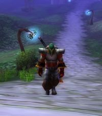

Les Terres de Kirin Tor
Saarht
Points : 11

Joué par :
[ Information masquée ]
Age : 25
Lieu de naisance : Stormwind
Signe de naissance : Inconnu
Sexe : Homme
Race : Humain
Faction : Alliance
Formation : Paladin
Niveau : 51
Guilde : Caste de la Lune Noire (la)
Artisanat 1 : Forgeron
Artisanat 2 : Mineur
Envoyer un MP
Informations hrp : Saarht est un paladin aimant ce promener au grés des rencontres plus que des quetes...du coup, la montée en niveau en pâtie, mais ce n'est pas mon objectif ;-)
Horaires de jeu plutôt variables.....mais dépendant du boulot et des impératif d'une vie IRL bien remplie ! ;-)
Description : Je me prénomme Saarht, aujourd'hui paladin humain au service de l'alliance, mais surtout de tous ceux nécessitant mon aide. Ma masse est toujours prête à rendre service, même lorsque cela ne me rapporte que la gratitude des gens que j'aide au hasard de mon chemin. Aussi loin que je me souvienne, la lumière n'a jamais été ma première motivation pour rejoindre l'ordre des paladins.. Ce qui m'a poussé dans cette voie serait plutôt des affinités avec tout ce qui entoure la magie et mon aptitude au combat...trois voies s'ouvrirent alors à moi : celle du guerrier, celle du prêtre, et celle du paladin.Seule la dernière semblait convenir à mes aspirations : ne pas négliger mon don latent de soigneur, ne pas mettre de côté mon penchant pour les combats de mêlés, et ne pas devenir un fanatique religieux, bien qu'il y en ait masse dans les rangs des paladins ! Je me souviens de mes débuts...je ne suis pas né dans une famille noble, mon père était forgeron et ma mère serveuse dans une des nombreuses tavernes de Stormwind. Comme tous les jeunes de mon âge, j'apprenais les rudiments du langage et de l'écriture dans une des succursales de la cathédrale. Autant dire que nous en voyions passer, des glorieux guerriers en armure de plates ! Dans ces périodes troublées correspondant à la fin de la guerre contre le fléau, mon père m'apprit à me battre « au cas ou » comme il aimait à le répéter, et à trouver du métal dans les divers mines afin de pouvoir me forger mes propres armes, toujours « au cas ou» C'est tout naturellement que ma route en vain à croiser celle d'un recruteur de « jeunes talents » de la Lumière...enfin, disons que je sortais du lot dans une bagarre de taverne que j'avais déclenchée et que ce personnage ce trouvait justement parmis les gardes qui me maîtrisèrent rapidement !
Ma formation commença comme beaucoup à l'abbaye du Northshire, à apprendre le maniement de la masse en massacrant joyeusement ceux qui représentaient une menace pour la vallée, et en tentant de maîtriser les quelques sorts de soins enseignés par mon maître d'alors.Une fois cet entraînement de base terminé, je reçu de quoi me défendre, et défendre les peuples de l'alliance, l'aventure pouvait enfin commencer !
Ère du Conflit [14]
Lune de la Force
Décade du Panda
Décade du Gorille
Décade de l'Ours
Lune d'Agilité [6]
Décade du Tigre
Décade du Singe [6]
Début des récits de Saarht
2 ième jour de la décade du Singe, ère du conflitPremiere feuille, les Carmines
Il est grand temps pour moi de penser sérieusement à écrire?.non seulement ça occupe mes soirées aussi agréablement que de descendre une chopine avec un ami nain, mais qui sait, peut être ces écrits pourront ils servir? C?est décidé, à partir d?aujourd?hui j?écrirais et laisserais une copie dans les tavernes me servant de point de repos?.Certains ce divertiront peut être à me lire, d?autres y trouveront peut être des informations utiles ! Alors écrivons un peu de notre histoire?..l?histoire m?a toujours passionné, mais ces décennies de guerres, aussi bien contre la horde que le fléaux ont fait disparaître bon nombres d?ouvrages et d?édifices?.les recherches sur notre passé seront longues et périlleuses, aussi, toute personne désireuse de m?aider en remplissant les pages que je laisserais vierges le pourront?J?ai d?ailleurs entendu parler d?un groupe d?historien il y a peu, le mieux serait de les trouver et de les aider? Bah, pour l?instant, je me contenterais du passé proche, ou du présent !
3ième jour de la décade du Singe, ère sanglanteDarkshire, bois de la pénombre
Bien, je me retrouve sur les lieux de mes premières « vrais » aventures : les Carmines?que de souvenirs? Cette région est plutôt aride, mise à part le lac Placide et le petit filet d?eau en découlant, filant tout droit vers l?Est, les Chutes de guet-de-pierre et un vaste repaire d?Orc BlackRock?des créatures semblables a ceux de la horde, mais d?un naturel bien plus agressifs encore ! Leurs techniques de combat sont assez variées, alliant masse, épée, et utilisation de filets vous entravant le temps nécessaire à vous donner quelques coups de chausses cloutées dans l?estomac?.Ils sont assez facilement identifiables?.si une chose verte, agressive, et d?une tête de plus que vous s?approche, il y a de forte chance que le combat s?avère intéressant?. Lors de ma première confrontation avec eux, je dois bien avouer que mon armure a souffert ! A l?époque bardé de bronze, métal dont je venais juste de maitriser les rudiments, leurs coups nécessitaient des soins assez urgents et réguliers ! Mais il faut bien avouer que c?est à cette époque que j?appris réellement le maniement de la masse à deux mains, ainsi que les dégâts qu?elle pouvait occasionner sur les parties exposées, comme la tête, de mes adversaires ! Une amie Elfe me demanda d?ailleurs d?éviter de trop insister sur les crânes d?Orc, leur cervelle étant plutôt collante sur sa robe en soie?.
Les monts des carmines cachent encore beaucoup d?autres menaces, tel les gnolls, ces humanoïdes à tête de chien?certains semblent maîtriser une sorte de pouvoir, libérant des décharges comme un coup de foudre miniature?Le bourgmestre local offrait d?ailleurs de fortes récompenses à qui ramenait un certain nombre de têtes de ces « animaux » armés et dangeureux?.bien qu?ayant depuis longtemps dépassé mon quotas de chasse au gnoll, je suis resté dans ces contrées arides pour aider mes semblables, nains, elfes, gnomes et humains travaillant à l?extermination de ces abomination sur pattes. Les dragonnets aussi, donnent dans la perfidie avec leurs vols désordonnés vous les jetant bizarrement toujours à la figure.. piètre cible en corps à corps, mais redoutable à distance ! Les espèces de vautours qui vous déséquilibre à la moindre minute d?inattention, les araignées géantes venimeuses, tout autant de dangers?.Se souvenir?aujourd?hui, il faut croire que c?est moi qui fait peur ! Ces créatures ne s?attaquent plus a moi, ou du moins, attendent que je passe vraiment très près pour tenter l?esquisse d?une attaque ! Je viens juste de croiser une équipe de 2 aventuriers en difficulté avant d?arriver en vue de Lakeshire?leur témérité les a fait ce retrouver au sein de 6 Gnolls visiblement peu content ! Je me suis rendu compte de l?évolution de mon entraînement au moment ou ma masse terrassait ces créatures en 1 coup léger?J?ai laissé ces deux aventuriers piller les corps, non sans leur avoir prodigué quelques soins, et mis en garde contre les charges hasardeuses au beau milieu d?un camps adverse? « un gnoll peut toujours en cacher un autre ! » J?eu droit aux remerciements de rigueur, mais plus intéressant : un tonnelet de Thunderbrew, apparemment une bière?.je termine ces lignes, et test ça tout de suite après ! Au fait?pourquoi suis je revenu ici moi ? Ah oui ! trouver du minerais Rethban pour un ami dans le besoin? Si vous en cherchez, n?hésitez pas à vous aventurer dans les cavernes Rethban, situées au Nord ouest de Lakeshire?.quelques gnolls en gardent l?entrée, mais rien d?insurmontable?.de plus, j?ai trouvé quelques agates et pierres lunaires dans des veines d?étain, relativement courante par là haut.
Note pour les mineurs : on trouve pas mal de cuivre et d?étain aux Carmines?.profitez en, la grotte des champions Blackrock au Nord est assez bien fournie mais relativement bien gardée ! Sinon, petite dominance de cuivre dans les veines à l?air libre?
Voilà, cette journée fut bien remplie, et principalement dédié à un petit retour sur mes débuts?
(mots à la limite du compréhensibles, griffonnés en bas de page?.)
Adden..du..n ? m? Bière thundebmachin, bien bone bire?donne unpeu mal àlatête?à moin casque encore sur tête
(grosse trace de joue sur la feuille)
4ième jour de la décade du singe, ère sanglanteVers Ménéthil
Auberge de Darkshire?.je ne me souviens plus trop du voyage entre les Carmines et ici, si ce n?est que je l?ai fait en compagnie d?un sacrée mal de crâne?ne pas mélanger la bière et le rhum, c?est plus explosif que ces satanées « cannes à pêche Gobelins » ! C?est mon troisième voyage dans le bois de la pénombre?je fais celui ci pour « agrément », comme on le dit dans les hautes castes de Stormwind?quoiqu?on soit assez loin des plages qui bordent Booty bay ! J?ai trouvé une tunique étrange sur le corps de ce que l?on nomme ici un « NightBane », j?ai rendez vous avec un mage de mes amis, nommé Cador?.peut être pourra t?il m?en dire plus, mais de toute façon, je pense lui en faire don?il ne devrait pas tarder.
Cette journée fut entre coupé de trucidage massif de morts vivant, ça occupe pas trop mal et ça permet de ce remettre les idées au clair après une biture ! Croyez moi ou pas, mais les pouvoirs conférés par la lumière sont d?une efficacité retentissante sur ces abominations ! Nous avons nettoyé à deux paladins un caveau situé au lieu dit « la colline de Raven » Des espèces de créatures en décomposition avancée, ce mouvant les bras ballant et dégageant une forte odeur de chair putride?un spectacle qui ouvre l?appétit ! Ma nouvelle masse fait des merveilles?.bien que plus lourde que la précédente, elle fracasse avec autant de facilité les os que l?armure?ça tombe bien, ces deux éléments sont tout ce qui composent ces arpenteurs plus vivants que morts?Nous avons aussi découvert un fragment du passé de la région qui m?avait échappé lors de mes précédent passage ici?dans une espèce de cratère, un portail ressemblant fort à ceux que j?ai pu apercevoir sur les terres Elfes de la nuit, mais plus important en taille?.je questionnerais Lirisandre à ce sujet, une amie Elfe de la nuit, prêtresse d?Elune?.je dois lui envoyer de la soie, j?en profiterais pour poster un message?Peut être aura t?elle un élément de réponse.
Cette sombre région est bien dangereuse pour qui s?écarte des sentiers battus ! Des ravageur, espèce de loups de la taille d?un b?uf, les Nightbane, ressemblant étrangement aux Gnolls, mais en bien plus gros et puissant, mais n?utilisant pas d?armes (note pour plus tard : essayer de trouver si il y a un lien entre ces deux races, et d?ou viennent elles ?) des Ogres agressifs, mais pas avares en divers trésors (faire attention à ceux à deux têtes ?ils semblent capables d?enflammer quiconque s?approcherait trop près?), divers sortes d?araignée et de loups?. En contre partie de tous ces dangers, la région possède beaucoup de trésor jusqu?à présent non découverts, n?attendant qu?un aventurier pour les ouvrir?de plus, le bon mineur pourra apprendre ici la fonte de divers métaux comme l?or ou le mithril, grâce au maître mineur situé à côté de l?excellente forge de Darkshire, et s?entraîner sur les nombreuses veines d?étain, de cuivre, de fer, d?or ou d?argent sortant de terre autour du fameux cratère, ou dans les grottes de Roland ou des Ogres de Vul?Gol?je viens souvent par ici, rechercher du fer?les dangers sont tout de même moindre que dans les régions plus fournie, mais ou ma durée de survie ne dépasse pas le premier coup de pioche !
Il ce fait tard? Mon amis ne devrait plus tarder, je pense que ce cadeau lui fera plaisir !
6ième jour de la décade du Singe, lune d?agilitéretour à Darkshire
J?avais oublié combien le voyage pour Ménéthil, à pied, était long?.j?ai quitté Darkshire hier, non sans avoir fait un stock de métal important afin de confectionner une armure robuste, en fer sylvestre, pour mon Frère Saarh?Je suis certain qu?il en sera satisfait, j?y ai rajouté quelques pierres, tel des agates ou du jade, trouvées dans certaines mines. Par contre, mes investigations concernant ce mystérieux portail de la région des bois de la pénombre stagnent un peu. Lirisandre me suggère que cela pourrait avoir un lien avec le « rêve d?émeraude », nom que j?ai déjà entendu lors de mes voyages à Teldrassil ou reflet de lune. Si comme sa lettre le suggère, ce portail donne sur une dimension alternative, il reste encore à savoir comment il est arrivé ici, quand, et comment cela fonctionne? Après tout, les religions et croyances d?Azeroth sont étroitement liées, et je pense qu?il est du devoir du clergé et donc des paladins et prêtres, de s?intéresser aux diverses croyances et pratiques.
Bien?.j?ai donc passé ce 6ième jour à Ménéthil? un bien grand port de l?alliance ! à priori, il n?y a pas qu?à Darkshire que l?on trouve des morts vivants ! J?ai aidé un matelot à récupérer deux trois choses sur les épaves de son ancienne armada? à peine ais je mis le pied sur la proue engloutie du premier vaisseau qu?une horde de fantômes ce jetait sur moi ! Le combat fut relativement éprouvant, mais la lumière me permis de rendre la paix à bon nombre de ces âmes errantes. J?eu la frayeur de ma vie lorsqu?un de ces pauvres bougres me transforma en l?un d?eux? je revis ma vie, et me demanda si je la retrouverais un jour? par chance, le sortilège s?avéra temporaire. Je dirais que pour un paladin, voir les choses par des yeux éthérés est une expérience permettant de mieux comprendre la mort. Je passerais pour hérétique si j?écrivais ici les tentations que j?ai ressenties en tant qu?être de brume.
Pour ceux qui recherchent l?aventure, cet endroit est assez bien fourni ! le dirigeant du fort n?est d?ailleurs pas à court d?idée pour occuper les nouveaux arrivant?il faut dire que les paluns fourmillent de dangers, tel des Orcs du clan Dragonmaw, bien plus virulent que ceux des Carmines, les morts vivants des épaves de la flotte, ces satanés espèces de Murlocs et leur cri ridicule, et tout un bestiaire faisant le plaisir des dépeçeurs? pour le minage, on a connu mieux? je n?ai pas encore tout exploré par ici, il paraîtrait qu?au Nord des nains « dark Iron » occuperaient une vieille cité? ce sera le but d?un autre voyage, pour le moment, je vais me reposer?demain, je dois reprendre la route afin d?aider un ami en difficulté au bois de la pénombre.
Note pour un prochain passage : l?hydromel, c?est bon !
Note bis : les griffons ne sont pas des chiots? ne pas les caresser et tenter de jouer à la balle avec eux, surtout quand on les voit en double?l?hydromel, c?est bon, mais c?est traître !
8ième jour de la décade du singe, lune d?agilitéDirection : Stranglethorn
Je suis enfin arrivé à Darkshire ce matin, au lieu d?hier comme cela était initialement prévu? les maitres des griffons sont des gens manquant assurément d?humour ! Ma tentative puérile de cacher un griffon sous un tonneau, en étant sous les effets de l?alcool n?a eu comme seul résultat que de me faire terminer la soirée dans un des cachots « temporaire » du fort de Ménéthil et une chemise en cour de digestion dans l?estomac du dit griffon?je ne dois ma sortie qu?à mon rang de paladin et aux services rendus dans la région?Il va sans dire que je ne me sens pas vraiment fier de cette soirée, et espère vivement que d?autres aventuriers face bien pire afin de faire tomber mon histoire dans les limbes de l?oubli ! à voir les rixes régulières ayant lieu dans la taverne de Ménéthil, ça ne devrait être l?histoire que de quelques jours?
Bien, ma matinée a somme toute bien commencée?en attendant l?heure de mon rendez vous avec mon ami, j?ai décidé de chercher une saine occupation?chose qui ne manque pas ici ! J?avais d?ailleurs récupéré à Ménéthil un métal particulier, à la demande de Sven, un homme luttant contre les restes du Fléau au bois de la pénombre. Après enquête et petit détour par Stormwind, il c?est avéré que ce métal servait à forger une arme faisant tomber les défenses des démonistes, nécromanciens et autres mages au service du Chaos. Je ne mis pas longtemps à trouver quoi faire ! Sven me confia l?existence d?un sorcier relativement puissant (nul doute qu?il y en ait d?autre !) non loin de son campement. Sur le chemin de cette demeure maudite, j?ai croisé deux paladins, apparemment eux aussi sur cette affaire. Notre progression fut assez lente, la masure étant occupée par des groupes de maraudeurs, dévoreurs et autres abominations. Notre foi concentrée sur une seule cible suffisait parfois à désintégrer cette dernière, sans avoir à recourir à nos armes? mais le sorcier, lui, s?avéra bien plus difficile. Ses sorts incapacitant nous empêchant de faire le moindre mouvement, son habilité lui faisant esquiver beaucoup de nos coups?plusieurs fois nous nous retrouvâmes en situation délicate, frappant tant et plus, pratiquement sans résultat. Mais notre endurance et le fait que notre adversaire ne pouvait plus émettre le moindre sort, ayant consommé toute son énergie contre trois adversaires liés par ce qu?il y a de plus sacrée, a fait de nous les vainqueurs de cet affrontement? C?est avec une armure dans un état pitoyable et éreinté que je rejoins l?auberge, afin de reprendre des forces avant l?arrivée de Cador, un de mes ami mage.
Il arriva finalement, en début d?après midi et me mis au courant du « pourquoi m?avoir demander de venir » La raison tenait en un nom : Mor Ladim?. Cette créature éternelle qui arpente le cimetière de la colline de Raven, veillant sur ses sbires, les maraudeurs, restes de guerriers jadis puissant aujourd?hui déchus. Vous vous demanderez sûrement mais pourquoi le « tuer » étant donné qu?il renaît presque instantanément ? Pour deux raisons : la première est de permettre pendant un cour temps aux gens s?aventurant dans ce cimetière de ne pas succomber sous sa lame?.la deuxième raison est justement pour récupérer cette lame « magique » qui réapparaît en même temps que lui. Au passage, un autre mage c?est joint à nous, un gnome du nom de Bimpnottin?un peu insouciant, nous avons décidé de tenter notre chance? ce fut un désastre et un bon entraînement à la course ! je sentais ma vie m?échapper à chacune de ses puissantes attaques...Son épée est effectivement une arme redoutable ! cette petite séance de course forcée (croyez moi, un gnome avec un mort vivant faisant 3 fois sa taille au derrière court aussi vite qu?un Tauren déchaîné à qui on aurait planté une brochette dans l?arrière train !) nous à fait rencontrer une guerrière répondant au nom d?Akrima?quelques centaines de mètres plus loin, nous avons enfin pu reprendre notre souffle, notre adversaire ayant déclaré forfait. Au vu de notre déroute plutôt cuisante, nous avons décidé de faire le point, et de faire connaissance avec celle que nous avions bien malgré nous embarquée dans cette sombre histoire ! C?est à peu près à ce moment, qu?Adriana, la compagne Elfe de Cador nous rejoignit?Notre petite troupe mis au point une stratégie rapide et logique, afin de venir rapidement à bout de notre adversaire?la guerrière charge et frappe, fracasse son armure et le ralenti au maximum, je frappe et envoie tout mon arsenal anti mort vivant, les deux mages lui carbonisent les fesses et lui rafraîchissent la tête pendant que la druidique compagne de Cador nous soigne, ou vient montrer à ce mort de quel bois peut ce chauffer une elfe transformée en Ours sombre?.Le résultat fut édifiant : à trois, nous avons couru mais à cinq, un petit tas d?os et de métal traînait sur le sol en environ dix secondes?
Oui, ce fut une bien belle journée?J?ai encore rendu quelques services par ci par là, escorter un guerrier dans les grottes de Vul?Gol que je commence à connaître par c?ur, sauver deux trois gnomes au prise avec des ravageurs?.la routine d?un paladin, en somme ! Demain, j?irais en direction de Stranglethorn? on m?a dit qu?il y avait des ruines intéressantes, des mines en pagaille, mais tout autant de danger ! Je devrais sans doute trouver à me rendre utile?
9ième jour de la décade du singe, lune d?agilité
Cette journée a commencée par un aller retour rapide à Stormwind?C?est sur missive de Lord Grayson que je pénétrais ce matin dans l?enceinte de la majestueuse cathédrale de Stormwind. Dès les premiers pas sur les marches en marbre de l?escalier menant au sas d?entrée, les souvenirs affluèrent?ère d?insouciance ou enfant, je venais étudier les rudiments de l?écriture, de la lecture ou de l?histoire d?Azeroth à laquelle succéda le temps des premiers rapports et entraînements de paladin?souvenirs?Aujourd?hui, c?est dans la même armure que celle de ces fiers guerriers qui me faisaient rêver enfant, que je gravis ces marches.
La lettre reçue tard hier soir ne comportait que quelques mots : « cessez toutes activités non vitales séance tenante, et rendez vous chez votre maître » le ton impersonnel et impératif de ce message laissait entendre une urgence non dissimulée?. Je pris tout de même le temps de saluer l?Archevêque Benedictus avant de rejoindre l?aile de la cathédrale dédiée aux paladins. A ma grande surprise, j?étais seul, face aux trois instructeurs?Le Seigneur Grayson saisit l?interrogation naissant sur mon visage, et aussitôt il prit la parole : « soyez le bienvenu Paladin ! Aujourd?hui est un grand jour?pardonnez le ton de la lettre, mais tous les paladins étant régulièrement occupés à toute sorte de tâche, c?est le seul moyen de les revoir ici que d?y adjoindre un impératif ! » voyant la pression redescendre comme dans une cocotte minute dont on aurait subitement enlevé la soupape, il poursuivit : « Vous avez prouvé votre valeur, maints rapports transcrivant vos agissements nous sont parvenu, et mis à part? » il marqua une pause et me sourit avant de reprendre « mis à part une petite cuite à Ménéthil, vous êtes en accords avec les engagements que vous aviez pris à votre incorporation? Aujourd?hui, vous n?êtes plus apprenti?aujourd?hui, vous voilà devenu un vrai paladin ! Continuez à servir la lumière, Saarht?continuez à servir le peuple d?Azeroth en restant humble !»
Bien que cet épisode me remplit de fierté, j?eu du mal à marmonner quelques mots tels que « merci » ou « merci beaucoup », ou encore « je ferais de mon mieux » A l?issu de ce discours encensoir, je reçu quelques entraînements que je ne pouvais pas maîtriser avant?C?est donc sur de moi que j?entrepris le voyage vers l?entrée de Stranglethorn?Les créatures de Duskwood me craignant désormais plutôt que l?inverse, le voyage fut bref et sans accro? mis à part peut être une rencontre avec une espèce d?Ogre dont les intestins pendaient par des plaies béantes, tout c?est bien déroulé?
C?est avec une certaine joie que j?ai retrouvé deux de mes compagnons sur place? Akrima, la guerrière toujours aussi décidée à trucider tout ce qui compte deux pattes ou plus, et Adriana, plus séduisante sous sa forme naturelle d?Elfe de la nuit, que d?Ours?.c?est ensemble que nous nous rendîmes à un camp de rebelles, juste à l?entrée de la région, afin de nous renseigner sur les lieux?il semblerait qu?un certain « Kurzen » ait pris le maquis, et soit la cause de pas mal de problèmes à l?entrée de la région?l?intendance du camps nous avoue aussi un manque en remèdes contre les maladies tropicales?remède que bien sur les troupes de Kurzen possèderaient. Et bien, je pense que tout ceci serait un emploi intéressant pour un paladin ! Notre petit groupe prit donc la route du camp de ces brigands?.à première vue, du haut de notre butte, nous voyons pas mal de guerriers et d?hommes ressemblant à des mages?des combats faisaient déjà rage en bas, et laissaient entrevoir que ces Kurzens sont très loin d?être des manchots ! les mages ce guérissant, les guerriers fonçant à plusieurs sur une cible, etc?Les défias rencontrés jadis dans la forêt d?Elwyn, ou aux marches de l?ouest ne sont que des enfants par rapport à eux? c?est avec une certaine appréhension et avec beaucoup de circonspection que nous avons commencé notre approche. Mais toute peur sembla s?être évanouie à la première charge de notre guerrière ! l?adrénaline et notre entraînement aidant, nous nous sommes jeté dans la mêlée?bien que visiblement assez coriaces, nombre de ces mécréants ont tenté de prendre la fuite devant nous ! Les combats furent long et éprouvant, la recherche de ce remède n?a pas été chose aisée ! à priori, seuls ceux que les guerriers appèlent « guérisseur !! » en possèdent. Au plus profond du camp, nous fîmes la connaissance d?une prêtresse en difficulté, nommée Crimson?c?est avec joie que notre groupe l?accueillit, notre druide n?ayant plus à nous soigner, elle pu reprendre sa forme sauvage et montrer à ces Kurzens que la nature peut être plus forte qu?une cuirasse en cuir?C?est en frôlant une espèce de tour que nous avons fait la découverte d?un autre type de troupe des Kurzens?des commandos, pratiquement invisibles, et très rapides?deux de ces nouveaux adversaires périrent, non sans mal, après un âpre corps à corps. Une fois nos sacs plein des fameux remèdes, nous avons repris la route du camps, ou nous avons été accueilli avec enthousiasme. Mes trois compagnes ayant des affaires à terminer de leur côté, nous prîmes congé non sans avoir échanger de longs « adieux » ou « à bientôt » !
Ayant encore un peu de temps avant de devoir retourner à Darkshire, je me suis mis en quête de services à rendre?c?est par hasard, en coursant une jeune panthère, (à moins que ce ne soit l?inverse?) que je fis la découverte du camp de l?expédition Nésingwary dont les membres me chargèrent de divers tâches de chasse dont je me suis acquitté assez rapidement, dans la limite de mes compétences et de mon temps. En tout cas, c?est aussi à ce moment que je fis la connaissance d?un Troll? pour situer l?action : moi, tout seul?une panthère arrive, je l?engage?mais ils semblerait que ses compagnes n?étaient pas loin, puisque 3 secondes plus tard, ce n?est plus une, mais 3 panthères que j?avais sur le dos ! je vis un éclair de givre littéralement congeler un de mes agresseurs, me laissant le temps de terminer une bestiole et de faire appel à la lumière afin de soigner mes blessures. Quelle ne fut pas ma surprise lorsque je vis une créature bien plus grande que moi arriver et me débarrasser de ces chats un peu collants?Nous somme resté quelques secondes à nous dévisager, puis à échanger quelques signes démontrant nos intentions non hostiles? quel dommage que je ne parle pas leur langue, je suis certain que ce troll aurait pu m?en dire sur les ruines parsemant cette région !
En tout cas, pour une première approche de l?endroit, que d?action?.ce lieu fait le bonheur des dépeceurs ! Et les mineurs trouveront aussi leur bonheur, à ce que l?on m?a dit, mais à condition qu?ils soient assez fort pour atteindre certains gisements, comme ceux, très prisés, de vrai-argent?.le fer est très courant par ici, et ne nécessite pas trop de prise de risque?.sinon, il paraît que le Mithril est assez courant, au sud?je verrais ça plus tard ! En attendant, un peu de repos ne fera pas de mal?
Décade du Faucon
Lune de l'Esprit [8]
Décade de la Chouette [3]
de retour de perm'
( Quelques décades sont passée?Saarht, après un congé bien mérité ce décide enfin à sortir de sa retraite?..enfin, si on peut appeler 2 décades passées à boire, manger, et titiller les poissons de la baie du butin une retraite? )Booty Bay, ou la Baie du butin
Nous sommes aujourd?hui le? en fait, j?ai un peu perdu la notion du temps en même temps que j?ai découvert le concept de « permission »? cet étrange état permettant aux paladins de reprendre des forces en vivant tel des hommes normaux quelques temps, mais aussi de vivre comme ceux qu?ils défendent, en tant que simple citoyen, sans armes ni armures. J?ai appris à mes dépends que le respect des autres est particulièrement basé sur l?apparence? habillé comme tout un chacun, j?ai été pris de haut par beaucoup ! Ils devraient tenter l?expérience, je suis certain que beaucoup auraient à y gagner en humilité et modestie ! Paradoxalement, le fait d?être un « simple citoyen » permet aussi d?assister à d?étranges évènements qui n?auraient sans doute pas lieu devant un paladin clairement identifié ! Par exemple, ma première nuit?.je décidais de la passer à Stormwind, à l?auberge située à côté de la banque dont j?ai oublié le nom? je pris une chambre et je tentais de me reposer lorsque des bruits et des cris provinrent de la chambre juste à côté? j?entendis des noms, Siana, Magdaléna et une certaine Télima, je crois? J?ai eu beau demander un peu de calme, il semblait que quelqu?un souffrait. Aussi, devant si peu de bonne volonté quant à me permettre de dormir un peu, je suis allez voir de quoi il retournait ! A priori, une femme était blessée, et on m?expliqua de manière expéditive que mon aide n?était vraiment pas nécessaire, qu?une guérisseuse était en route. Quelle ne fut pas ma surprise en voyant mon amie Lirissandre, la prêtresse d?Elune avec qui j?avais noué contact, arriver dans l?auberge? Ainsi, c?était elle, la guérisseuse attendue? d?habitude, elle est plutôt insouciante, chaleureuse, peut être un peu gauche aussi, mais là, je ne retrouvais pas l?Elfe que je connaissais?elle semblait tendue et aux ordres des femmes veillant au chevet de celle qui était mal en point. J?ai entendu de sombres histoires de démoniste, de trahison, de rixe? il faudra que je demande à Lirissandre ce qui c?est passé ce soir là, mais je suis certain d?avoir été témoin de discussions qui ne m?étaient nullement destinées.
Je mis quand même à profit ces vacances pour tenter d?en savoir un peu plus sur les ruines de la région?et toujours sur ce portail Elfique dont la présence à Duskwood m?obsède. Mes pas me firent rencontrer une Elfe, Lüne, qui bien qu?élevée par des humains n?avait aucune idée sur ce fameux portail ! Mais c?est avec plaisir qu?elle m?y accompagna, afin de le voir de visu et m?aider à trouver des indices. Il semblerait qu?un petit puit d?éternité soit présent à droite du portail, ce qui confirmerait l?origine?Mais l?arbre soutenant le portail est tout simplement immense?.ce pourrait il que les racines de l?ardre monde Teldrassil aillent jusqu?au c?ur d?Azeroth, voilà une question que cette petite équipée fit monter à la surface? En attendant, je vais profiter de mes derniers jours de tranquillité à la baie du butin ! Demain, les aventures devraient reprendre?
PS : il faut vraiment que je retrouve quel jour nous sommes?
PS II : je m?étais pourtant juré de ne plus boire le rhum de la région?.il faut que je trouve un alchimiste qui me concocte une potion anti gueule de bois?
Décidément, je vais vraiment finir par croire que l?alcool local de la baie du butin détruit purement et simplement les neurones ! Je ne sais toujours pas quel jours nous sommes, et cette chose abstraite qu?est le temps ne sembles vraiment pas faire partie des préoccupations des autochtones ! Des pirates et pillards des flots noirs, parlant avec un accent à couper au couteau et une haleine plus chargée en alcool qu?un Tauren n?a de poils, le service d?ordre local plus enclin à donner des coups de masses plutôt que des coups de mains, le nain maître des griffons préférant arnaquer ses clients avec ces tarifs prohibitif et ses slogans de pub pour vendre ses voyages : « Stormwind ! Ses filles à moitié nue, ses échoppes exotiques, ses armureries, ses statues, sa cathédrale, ses tavernes, tout ça à portée de vos?euh?de votre bourse ! Inclus dans le prix du voyage, une nuit avec une beauté au physique sauvage » (il s?avèrerait que la beauté sauvage en question soit un femelle Troll?) enfin bref, personne ne ce souciant de cette question très simple : « quel jour sommes nous ? » Hum, je crois que je m?égare? Je retrouverais un calendrier dans des lieux plus civilisés ! Me voici donc à nouveau en arme, prêt à en découdre avec qui le souhaitera ! Si l?allez vers la baie du butin s?était effectuée en bateau en partant de Ménéthil, je décidais cette fois ci de traverser tout le territoire à pied, histoire de voir les ruines bordant le chemin, et d?avoir une meilleure idée de la cartographie des lieux. Mon but étant de rejoindre le campement de l?expédition Nesingwary?.j?avais encore quelques ordres de missions à y récupérer. Et bien, le moins que l?on puisse dire est que la marche à pied est un loisir plutôt dangereux à Stranglethorn ! à peine avais je mis le pied hors des murs protecteurs de la Baie, que des pirates de la voile noire (ainsi qu?ils ce nomment eux même?) me fondent dessus. Enfin, je dis « des », je devrais plutôt dire « un »? et encore heureux qu?il fut seul ! Le combat fut long et épuisant, ma fidèle épée étant sans cesse parée ou déviée, mon armure maltraitée par des lames sinueuses et agiles?je ne dois ma survie qu?à la capacité de soigner mes blessures au combat ! A bout de force, je réussi néanmoins à rassembler mes dernières ressources dans un coup de taille que par chance mon adversaire ne put éviter. L?âme de mon épée ce chargea d?achever définitivement ma cible, en libérant une puissante charge d?énergie pure lorsqu?elle lui pénétra les chairs, fendant son torse en deux dans le sens de la hauteur. A bout de souffle, j?entrepris de fouiller le cadavre, à la recherche d?indices sur ces pirates. Je fit une trouvaille sur le morceau gauche, une page de livre apparemment?le morceau droit quand à lui, n?était qu?un tas de viscères carbonisées relativement infouillable. Ce premier incident terminé, je pris une goulée de rhum pour me remettre les idées en place et continua mon chemin. Le plus gros de la route ce fit sans trop de problèmes?.rencontre avec des espèces de lézards géants, d?autres tenant debout, des gorilles et même des murlocs ! bien plus coriaces que ceux des autres régions?(mais puant tout autant?)
L?arrivée au camp me permis d?apprendre beaucoup de choses?j?aurais donc croisé des « Basilic », créatures pouvant vous endormir d?un seul regard, des gorilles, et des Raptors? bizarrement, tous les chasseurs du camp me proposèrent de chasser ces divers animaux, en échange d?objets de valeur?et accessoirement, pour contrôler la population de créatures agressives de la région, afin de la rendre plus sure tout en lui gardant un petit côté sauvage. J?appris également que la page que je détenais, était issue d?un livre maltraité par les vents? une forte récompense étant à pourvoir pour ceux qui réussiraient à en rassembler des pages, je pris aussi cet ordre mission. La fin de journée fut relativement sans surprises, massacrant joyeusement Raptors, Anciens Tigres, panthères et Troll s?approchant un peu trop (ce qui me permis d?ailleurs de rassembler bon nombre de pages du livre?), soigner des imprudents estimant pouvoir combattre simultanément toute la ménagerie de la jungle, trouver quelques mines de fer dont certaines gardées jalousement par des espèces de mini troll (il va falloir me renseigner sur eux?) enfin bref, de quoi s?occuper jusqu?au souper et mon retour ici, à l?auberge de baie du butin. Il faudrait que j?envoie la soie que j?ai trouvée à Lirisandre, ce sera l?occasion de la questionner sur les évènements de Stormwind, bien que je ne pense pas qu?elle soit en mesure de me raconter toute l?histoire pour sa propre sécurité.
En attendant, je laisse ma plume de côté : le rôti de Tigre arrosé de bière naine arrive?et mon estomac a sans doute plus de crocs que la gueule d?un crocilisque géant !
Décade de la Baleine [3]
la SPA de Stormwind
Auberge de Darkshire. Comme à son habitude, Saarht s?assied sur l?une des nombreuses chaises disponibles, et tente d?écrire simplement ce qu?il voit, entend, ou fait? Certains messages reçus le motivent à continuerdécouverte d'Arathi
3ième jour de la décade de la baleine, Lune de l?Esprit
Enfin ! J?ai réussi à mettre la main sur un calendrier ! Mon petit voyage à Stormwind n?aura donc pas été inutile, je vais pouvoir à nouveau dater un minimum mes feuilles? J?ai aussi appris sur place, en lisant la multitude d?affiches fleurissant sur les murs de notre capitale, qu?une jeune femme répondant au nom de « Siele » comptait s?investir dans la sauvegarde de nos amis les bêtes?enfin, les petites bêtes, hors gnomes et gobelins, et plus précisément ceux que l?on appelle communément « de compagnie » (Pour répondre à la question qu?un nain sous l?effet de l?alcool m?a posé à la lecture de l?affiche, les femmes ne rentrent pas dans cette catégorie? parfois, je pense vraiment que la bière naine fait des dégâts irréversibles au cerveau ! ) Défendant pour ma part la vie sous toutes ses formes, mais n?ayant pas de temps à consacrer pour nos amis à poils, j?ai fait mon premier placement aujourd?hui. 2 charmants petits chatons dont l?avenir ce résumait à servir d?apéritif, puis source de peau à un Worg peu scrupuleux ! J?espère que son affaire marchera?dans le cas contraire, ils seront toujours mieux avec elle, qu?avec moi ? tout comme j?espère aussi que le postier en charge du colis ne soit pas un cuisinier en manque de matières premières?
Saarht pose sa plume et réfléchit quelques instants?La journée fut plutôt calme, mais un Worg en moins, ça ne suffit pas pour ce maintenir en forme?
Il ce leva et ce dirigea d?un pas sur vers la sortie de l?auberge, avec pour objectif de trouver du fer afin d?honorer une commande d?armure sylvestre, et accessoirement vérifier le tranchant de son épée sur quelques créatures s?en prenant aux explorateurs un tantinet trop téméraires.
La nuit est belle, le pâle reflet de la lune éclaire timidement les murs de la forge, le seigneur Ebonlocke continue ses rondes devant l?hotel de ville et quelques aventuriers ce querellent à propos du prix des sacs en laine autour de la fontaine trônant au milieu de la place? scènes classiques à Darkshire. Saarht remarque avec amusement que la clarté diffuse, perçant à peine le sombre brouillard noyant les bois de la pénombre, donne des airs fantomatiques à tout ce petit monde, lui rappelant les âmes perdues hantant les divers demeures abandonnées des environs. En fouillant un peu dans sa mémoire, le nom de la caverne de Vul?Gol fit surface :
« là bas, je devrais trouver mon bonheur?.du fer, et de quoi nourrir l?âme de ma lame ! » Le petit chemin sinueux menant à ces cavernes est assez souvent un lieu de rencontre, et on y croise presque toujours quelqu?un ! Que ce soit un druide Elfe remontant de Stranglethorn sous sa forme féline, ou un gnome courant aussi vite que le lui permettent ses petites jambes avec un ravageur collé à l?arrière train? mais ce soir là, le chemin est bien désert, et Saarht arrive à la plaine des ogres en ayant tout juste croisé des veilleurs, patrouillant avec leurs torches apportant quelques mètres carrés de lumière orange ce reflétant sur les pavés usés de la route. Un premier Ogre, vraisemblablement un contremaître, à en juger par la taille de son marteau, tente maladroitement d?assommer le paladin, qui d?un mouvement relativement rapide au vue des kilos de mailles le protégeant, esquive le coup et vient ce placer derrière la créature. Un rapide moulinet suffit à décapiter l?assaillant, faisant tomber lourdement le gros corps sans vie. Ça et là, quelques aventuriers ce battent contre les abominations vertes, mais personne ne semble réellement en danger, quelques soins suffisant largement pour leur permettre de continuer le nettoyage en bonne et due forme des lieux !
« mmm il doit s?agir d?étrangers?.je me renseignerais sur la signification du mots « thx » auprès d?un amis lettré ! Bien, encore quelques minerais, et retour à la forge? » Après quelques Ogres, la lassitude s?empare de Saarht, qui ayant enfin réuni tous les composants nécessaires à la confection d?un set d?armure pour un ami, reprends le chemin désert menant à Darkshire?.
« Morne soirée » pensa t?il en descendant quelques chopines « cette région est bien moins animée que par un temps, il va falloir songer à proposer mes services autre part?peut être Ménethil, ça fait longtemps?j?espère juste qu?ils ont oublié mes quelques mésaventures ! Sinon, la baie du butin, je pense qu?il y a de quoi faire par là bas pour un paladin . Allez, une dernière bouteille?. »
Saarht ce prélasse tranquillement sur une dune herbeuse des abords de Ménethil, contemplant le couché de soleil et sa clarté légèrement orange ce reflétant en stries sur les vagues?au loin, derrière l?épave du fameux vaisseau « Le Balbuzard », on peut voir et entendre les Murlocs ce reposant vraisemblablement eux aussi d?une journée éprouvante ! Le paladin ce souvint avec nostalgie de l?époque ou il dû chasser ces frêles créatures au cri ridicule, dans le but de retrouver une partie de la cargaison du navire échoué. Tout ceci lui paraissait lointain, il avait depuis arpenté bien des routes, affronté bien des dangers, mais surtout rencontré des gens uniques, avec qui il gardait le contact. C?est en ce remémorant tous ces souvenirs, les pages de son journal laissées à Ménethil à la main, qu?il prit la direction de l?auberge « Des Eaux Profondes » afin de poursuivre sa rédaction.Retrouvailles à Ménéthil
6 ième jour, décade de la Baleine, Lune de l?Esprit
On peut dire qu?aujourd?hui, l?aventure m?a trouvée ! Ma journée débuta par le départ de Darkshire, espérant trouver un peu plus d?animation autre part, et c?est dans cette optique que je débarquais à Ménethil vers midi? mais le départ fut un poil mouvementé, des Orcs ayant grièvement blessé Felicia Maline, la maîtresse des Griffons de bois de la pénombre, rendant tous voyages pratiquement impossibles. Ils n?étaient que deux, mais notre petit groupe improvisé d?une dizaine de combattants eu beaucoup de mal à en venir à bout ! Il devait s?agir de deux combattants d?élite ayant pour objectif d?isoler Darkshire, mais même leurs immenses pouvoirs ne leur sauvèrent pas la vie, bien que beaucoup d?entre nous périr lors de l?affrontement? Je n?ai d?habitude aucune agressivité envers les gens de la horde, mais ces deux là ont rompu le pacte de Thrall en attaquant une région déjà en prise avec les restes du Fléau. La justice fut rendue par leur exécution, mais j?espère que la soif de vengeance de certains de mes compagnons temporaires s?estompera, et qu?ils ne feront pas la bêtise à leur tour d?attaquer un lieu neutre de la horde? Ces altercations doivent cesser, nous avons assez à faire pour nettoyer nos terres respectives des cicatrices encore vivaces laissées par le Fléau, et éviter ainsi une seconde guerre contre le chaos, menaçant d?engloutir définitivement notre monde (Azeroth et Kalimdor confondu) dans une dimension d?ou personne ne revient. Vous qui lisez ces lignes, je vous encourage vivement à rester neutre, ou à aller vous battre dans les lieux propices tels qu?Alterac ou le Goulet de Warsong, lieux mis à votre disposition par nos seigneurs respectifs afin de réduire votre soif de sang en laissant les civils et la paix hors de danger. La légion ardente n?attend qu?une chose pour revenir : que nos peuples soient à nouveau dispersés et en conflits.
Saarht s?arrêta un instant : « je pense que ce n?est pas le moment de prêcher pour la paix?mais laissons quand même ces dernières lignes, peut être auront elles un impact positif sur quelques aventuriers lisant ces pages?Ou j?en étais moi?.à oui, arrivé à Ménethil ! » Il reprit sa plume en même temps qu?un verre de rhum, et continua à écrire?
Ce contre temps réglé, et Felicia remise de ses blessures, je pu enfin arriver à Ménethil. Je me souvins qu?un nain m?avait, à l?époque de mon premier passage, demandé d?aller voir un de ses amis, à proximité de Dun Modr? mes pas me menèrent donc à l?ancienne citée Naine. Il y règne une atmosphère de guerre de tranchées, pure et simple ! D?un côté, solidement barricadés derrière tout un tas d?objets hétéroclites, des nains de l?alliance et de l?autre, derrière des fortifications beaucoup plus efficaces, des nains Dark Iron gangrenés par le fléau ! Je fus tout de suite bien accueilli ! De larges sourires et des demandes d?aides de la part de mes alliés, du plombs et des bâtons de dynamite de la part des Dark Iron ? Dans ces conditions, difficile de ne pas aider les quelques pauvres nains tentant désespérément de contenir le danger ? Je pensais sur le moment pouvoir me battre assez facilement contre ces adversaires, qui semblaient bien moins efficaces que moi. Quelle ne fut pas ma surprise de voir que leur résistance était bien au dessus de la normale ! Et bien que je tape fort, je faillis souvent perdre des duels qui s?avérèrent de très longue haleine. Me voyant en relative difficulté, un petit groupe me vint en aide?aide ho combien inestimable dans ma situation?avec 5 nains collés à mes chausses? C?est en compagnie de ces renforts inespérés que nous avons pu réduire, pour un temps du moins, la menace des Dark Iron de Dun Modr. Je me rends compte, avec le recul, que je n?y serais jamais parvenu tout seul? comme quoi, il n?y a pas que moi pour aider d?illustres inconnus, et cette aventure me donne espoir envers le futur. Tant qu?il y aura des gens prêt à aider sans contre partie, notre monde persistera en dépit des menaces toujours grandissantes.
Un des nains gardant l?entrée détermina la suite de mon itinéraire en me confiant une lettre à porter au « refuge de l?ornière », situé plein Nord, par delà le Viaduc de Thandol. C?est ainsi que je découvris les territoires d?Arathi. Je fis aussi connaissance avec d?autres adversaires, comme le syndicat, dont j?espère connaître la nature sous peu, des Ogres ressemblant à ceux de bois de la pénombre mais un petit peu plus violent encore, des Trolls en pagaille, des araignées géantes, des vandales des plateaux, des raptors, des busards, des Kobolds, des morts vivants, et ainsi de suite ! Toute une agressive ménagerie découverte alors que je n?ai exploré que 10% de la région ! Par contre, ma pioche rencontra du fer, du mithril, de l?or, de l?argent, et même un minerais que je ne connais pas encore?.ressemblant à de l?argent mais plus pur, plus brillant? les mines gardées par les ogres et leurs alentours semblent en effet assez propices aux besoins des mineurs? Le manque d?auberge dans la région me fit faire demi tour, à dos de griffon cette fois ci, vers Ménethil. Mais je pense que cette nouvelle région mérite d?être explorée un peu plus en détail ! Je sens que je vais faire de ce lieu mon port d?attache?après tout, le bateau n?est pas loin, et les griffons me permettront d?explorer le Nord beaucoup plus rapidement qu?en partant de Darkshire.
Saarht ce leva, confia cette nouvelle page à l?aubergiste afin qu?il la mette, comme les autres, à disposition de ceux cherchant un petit peu de lecture pour passer la soirée. Le courrier lui réserva une surprise de la part d?un vieil ami, Cador, qui maîtrisant désormais la couture du tissu de mage lui avait envoyé deux sacs, beaucoup plus grands que ceux qu?il possédait. Vu l?état de ses sacs actuels, et le bazar accumulé au long de ses aventures, ce cadeau était plus que bienvenu !
Oui, ce fut vraiment une bonne journée?il ne manquait qu?une charmante compagne pour que la nuit le soit tout autant !
Saarht ce réveilla le lendemain matin, avec ce que l?on pourrait considérer comme une gueule de bois digne de celle d?un forgeron nain ayant fêté la création d?un nouvel alliage métalico-thorio-mithrileux pendant quelques semaines de petites beuveries entre amis? A vu de nez, il doit être encore assez tôt, les rayons du soleil commençant juste à éclairer par l?unique lucarne de la petite chambre, son visage un peu blafard et nanti d?une barbe drue naissante. Non sans mal il ce leva de sa paillasse, et tenta de faire le point sur une question relativement simple pour quelqu?un de parfaitement sobre : « mais bordel, à quel moment ma vie a foirée?enfin, surtout la soirée, et qu?est ce que j?ai foutu ! » S?en suivit une phase épique, celle qui consiste à tenter de passer la porte de la salle d?eau (en fait, une sorte de cagibi doté d?une vasque remplie d?eau plus ou moins croupie mélangée aux poils de barbe des précédents locataires) avec des épaulettes en acier trempé augmentant significativement la largeur du paladin, dans le but de se rafraîchir un minimum? Comme on aurait du s?y attendre, le titubage aidant, le montant de porte ne résista pas longtemps aux assauts d?un homme en armure arrivant de face, avec l?inertie propre à tout corps alcoolisé en mouvement, et c?est avec fracas et un peu de plâtre sur les épaules que Saarht arriva enfin devant l?objet tant convoité, la chose qui lui rendra visage humain : cette put? de vasque de flotte ! Au fur et à mesure de sa remise en état, quelques vagues souvenirs de la soirées affluèrent?.et c?est avec une certaine appréhension que l?homme décida de descendre dans la salle principale de l?auberge des Eaux Profondes, en espérant vraiment ne pas revivre les évènements de sa précédente murge ici même ! (qui c?étaient terminés, rappelons le, par une nuit dans les cachots « tout confort » de la forteresse de Ménethil?.) A son grand soulagement, l?aubergiste le salua cordialement sans faire allusion à un quelconque dérapage? A cette heure matinale, la grande salle était plutôt déserte, et le mobilier toujours en une seule pièce?Seul un nain, un tonnelet de bière fraîche à la main, occupait l?espace?ce nain, il le connaissait bien, et c?était d?ailleurs lui la source de la fiesta de la veille ! Il ce nommait Zarakhaï, et avait rencontré Saarht à l?époque ou lui aussi suivait les enseignements de Benedictus et de Lord Grayson à la cathédrale de Stormwind, en vue de devenir Paladin, au service des autres. Leurs routes s?étaient séparées lors des premières épreuves, chaque guerrier devant apprendre dans un premier temps à ce débrouiller tout seul et à s?ouvrir aux autres, alors imaginez les retrouvailles ! Le nain ce retourna vers son ami, et avec un sourire à faire pâlir d?envie un clown du cirque de Stormwind, lança l?air guilleret un tonitruant « B?jour mon ami ! » qui ne manquerait sûrement pas de réveiller les occupants de l?auberge encore prisonniers des bras de Morphée.
Saarht prit quand à lui un café, sachant très bien que sa morphologie de « grande brêle », comme s?amusait à l?appeler Zarakhaï, ne lui permettait pas de commencer la journée à la bière, qui plus est dans son état actuel, sous peine de retapisser quelqu?un ou quelque chose d?un flot de liquide gastrique. C?est donc son café à la main, l??il vitreux et un peu torve qu?il prit place aux côtés du nain qui ne semblait, quand à lui, vraiment pas souffrir de la veille.
« - Salut Zarakhaï?oh Bordel, j?ai encore plus mal au crâne que la fois ou je me suis pris le corps d?un ogre fraîchement décapité sur le coin de la trogne?. »
Le nain regarda son ami, l?air complice, et lui décocha un coup de coude dans les côtes, faisant résonner comme un glas la lourde armure protégeant le corps de ce dernier.
« - Bah, n?t?en fais pas trop pour ça mon ami ! J?ai trouvé récemment un almichis.. un alchmiti?euh, un truc qui fait des potions?.. »
« - un alchimiste, quoi ! »
« - Oui, voilà ! Un alchimiste ! Merci mon ami ! » (et Vlan, une grande tape dans le dos accompagne ces paroles?)
« - donc, cette al?euh?alchmitiste m?a confié une recette qui r?mettrait d?aplombs n?importe quel nain sortant d?un mariage de trois jours, et crois moi mon ami, c?est pas peu ! C?t?un mélange à base de sang-royale, douloureuse?à moins que ça s?appelle d?la doulourante, bouse fraîche de goretusk, poil de cul d?yéti, rotule de troll en poudre, et bave d?araignée forestière « pour le gout » qu?il disait?il doit m?en rester un peu, tiens, bouches toi le tarrin et avales ça d?un train?euh?trait ! »
Saarht prit la fiole que le nain lui tendait, la regarda avec une moue de dégoût et la porta à ses lèvres?un élan de courage (à moins que ça ne soit la main du nain?) le força à avaler le contenu?aussitôt, son visage commença à passer en revue les couleurs de l?arc en ciel, pour finir sur un très joli vert-Orc, et un rôt guttural puissant ressemblant fort au bruit d?un évier qui ce vide d?un coup, sortit spontanément de sa gorge encore en proie avec l?atroce gout de la mixture. Sans hésiter une seconde, il descendit cul-sec le reste de son café brûlant avec comme résultat de passer du vert au rouge vif?au moins, anesthésiée, sa gorge ne ce plaignait plus de sa récente expérience gustative douteuse.
« - Ouargh ! c?est positivement dégueulasse ton truc ! »
« - mouais?pas autant que ton rôt camarade ! j?ai l?impression qu?un d?ces orcs indélicats à lâché une perlouse non loin?t?en avais du bazar dans le bide ! »
« - hu?merci pour cette description ! enfin, ça à l?air de marcher ce remède miracle?j?ai juste un poil de je sais pas quoi coincé entre deux dents? »
« - sûrement un poil de cul d?yéti.. crois moi mon ami, apprécie le çui là, j?ai eu du mal d?l?arracher du postérieur de son propriétaire ! »
« - je te crois sur parole, évite de me raconter les détails de l?aventure qui t?ont poussé à te retrouver à quatre pattes devant le derrière d?un yéti? Bon, mais c?est que ça va vraiment nettement mieux, là, dis donc ! »
« - j?te l?avais dis ! ça soigne à peu près tout?.dommage q?certain des composants soient si difficiles à trouver ! Sans quoi, j?aurais monté un commerce qui, crois moi, aurait eu un franc succès chez mes frères nains ! En tout cas, ça m?a fait plaisir de t?revoir mon ami ! »
« - Et moi donc ! Mais j?avoue avoir comme un trou de mémoire, là? Je ne sais plus trop ce que l?on a fait hier soir, j?espère juste que notre réputation n?en aura pas trop souffert?Mine de rien, on a quand même un rang à tenir? »
« - Alors là mon ami, n?t?en fais pas pour ça ! j?dirais même que complètement bourrés, on c?est plutôt bien battu du côté d?Dun Modr ! On est allez chercher quelq?feux d?artifesse chez l?marchant d?l?ancienne auberge de Dun, on n?en a profité pour dégommer quelq?zuns d?mes sombres cousins, et on a enjolivé le ciel de Ménethil de mille feux pour l?plaisir des gens à not?retour ! »
« - donc si j?ai bien tout suivi, on a picoler comme des nains, on est pas passé par la case cachot de la forteresse, on a rien bouzillé dans l?auberge ou dehors, on a aider tes confrères de Dun Modr, on a animé pacifiquement les rues, et aucuns ennuis ? »
« - Et oui mon ami?les fêtes, c?est plus c?que c?était ! Mais ça fait plaisir d?ce r?trouver dans c?coin paumé ! A Stormwind ou à Ironforge, les paladins sont un poil coincés?la lumière gnagna, la lumière dit qu?faut pas boire, l?corps d?un paladin est son temple et faut pas l?souiller, etcetera? Si la lumière jugeait qu?on n?faisait pas not?devoir d?paladin, y a belle lurette qu?elle nous aurait privé de ses bienfaits et des pouvoirs qui vont avec ! On est d?jà sobre la journée pour combattre le chaos, faut pas trop en d?mander pour l?soir? »
Saarht resta pensif quelques instants, méditant sur les dernières paroles de son ami. Après tout, c?était justement pour pouvoir combattre, être au service des autres, mais rester tout de même un homme libre qu?il avait choisi le paladinat plutôt que la prêtrise. Et après tout, leurs supérieurs ne semblent pas en désaccord avec leur façon de faire? Comme le soulignait Lord Grayson, « Le rôle du paladin est d?aider les autres ! Il est le bras armé au service de la lumière, celui qui abat les sbires de la Légion Ardente ! Sa foi est inébranlable !» mais il ne pouvait s?empêcher, lors des fêtes marquant un retour de mission périlleuse, de rajouter « qu?aider un vieux camarade à descendre quelques tonnelets, c?était l?aider à ne pas mourir dans un futur proche d?une cirrhose aggravée? »
C?est sur ces considérations bonnes pour le moral que les deux compagnons décidèrent d?aller évacuer les restes de leur gueule de bois sur les quelques Dragonmaw sévissant aux alentours?Le jour commençait à éclairer timidement les collines bordant Ménethil, et cette aurore allait certainement être la dernière pour nombre de ces Orcs rebelles ! La journée, qui commença pourtant un peu de traviolle, promettait finalement d?être bonne !
Décade du Lapin [2]
Ironforge et sa....forge !
3ième jour de la décade du Lapin, lune de l?EspritIntégration de la caste de la lune noire
Me voici à l?auberge de Southshore?Aujourd?hui fut une journée dévolue à la Forge et au commerce ! Je connaissais déjà Ironforge par Bengus Deepforge, le maître artisan qui m?a appris quasiment tout ce que je sais de la transformation des métaux brut en armes ou armures. Il fut surpris de me voir arriver les sacs chargés de Mithril ! Selon lui, je ne devrais pas encore être capable d?en récolter autant?je sentis comme une pointe de convoitise dans son regards, bien que celui ci soit caché sous d?épais sourcils, cramoisis par la chaleur du brasier. Bengus est tout de même un peu vénal? il m?apprit quelques plans de forge en échange des quelques rares pièces d?or que je possédais ! Mais maintenant, je peux enfin confectionner des armures d?une solidité testée et approuvée par de nombreux guerriers. Du cuir, du tissu de mage et du Mithril?tout ce qu?il faut pour des épaulettes et des gants en plates ! Quel dommage que je ne puisse pas encore porter ce matériaux?il me manque l?entraînement nécessaire à pouvoir me mouvoir avec ce surplus de poids ! La forge d?Ironforge est un lieu impressionnant? une grande chaudière naturel, puisant sa force et sa chaleur dans les entrailles même de la terre ! On a l?impression, lorsque l?on est au beau milieu, d?être perdu sur une île postée en plein centre d?un océan de lave?quand on voit ce lieu, ou le moindre faux pas peut entraîner la mort par combustion instantanée, on comprends aisément que les nains présents soient tous plutôt sobres?Je n?eu aucun mal à trouver une enclume de disponible, vu le nombre de forgerons ce partageant l?endroit, les nains ont tout prévu ! Les commerçants des alentours disposant de tous les catalyseurs nécessaires, de charbon pour l?acier, ou de teinture pour orner nos réalisations. C?est en compagnie de bon nombre d?autres artisans que je fis mon premier objet en plate : des épaulières en Mithril. J?ai commencé par faire fondre le minerai afin d?en tirer des barres, beaucoup plus travaillables que le métal brute, mais surtout plus homogènes?.pour la suite, mon marteau ne m?a pas trahis ! La forme générale s?obtiens assez facilement, après, il ne reste qu?à faire un peu de décoration extérieur sur les bordures, polir le tout, et garnir l?intérieur de cuir lourd afin de garder un certain confort et de la mobilité aux jointures, tout en préservant un niveau de protection satisfaisant. La réalisation des gants est beaucoup plus longue?devoir faire chaque partie mobile avec un soin particulier, et lier le tout avec du tissu de mage, plus solide que la soie. Mais le résultat vaut bien un peu de sueur ! Le commerçant du coin me conseilla de vendre mes réalisations à l?hôtel des ventes?lieu ou beaucoup d?aventuriers viennent trouver des matériaux et des objets rares ou de bonne qualité. Je réussis tant bien que mal à me frayer un passage jusqu?au commissaire priseur, le responsable des ventes, qui m?expliqua le principe de fonctionnement : vous déposez un objet à vendre, en y mettant un prix et en fixant une durée. Les gens intéressés « enchérissent » dessus, et le meilleur enchérisseur à l?issue du temps impartit remporte l?objet. Les frais de mise en vente prennent en compte le courrier nécessaire à récupérer un objet invendu, à envoyer un objet vendu à son acquéreur, ou à vous envoyer la somme d?une vente réussie ! Je trouve le principe intéressant? Je mis donc en vente les gants et épaulières, et à peine quelques minutes plus tard, un nain arrivait en courant, une enveloppe ainsi qu?une petite bourse à la main?mes premiers deniers issus de ma propre production ! L?argent ainsi gagné me permit d?acheter une nouvelle épée, la dernière ayant subit les assauts d?une dentition Troll (qui comme chacun le sait, est d?une solidité digne du Thorium !) et de reprendre le griffon en direction du refuge de l?ornière.
Le voyage depuis les Hautes terres d?Arathi vers Southshore eu lieu sans trop d?encombres, c?est tout juste si deux trois de ces araignées croisées avec des b?ufs m?ont cherché des noises?ce qui me permis tout de même de tester ma nouvelle lame ! Il en ressort qu?étant plus légère et beaucoup plus tranchante que l?ancienne, les enchaînements de mouvements se font vraiment plus rapidement, et les dégâts sont assez impressionnant?tant mieux ! Cela aurait été dommage de dépenser de l?or dans une arme tout juste bonne à découper du saucisson.
Et c?est ici, assis à l?auberge de ce village côtier, que je me suis enfin décidé à chercher de l?aide pour mon énigme du portail de Bois de la Pénombre. Bien que ces pratiques soient toujours un peu tangentes en terme de légalité, j?ai pris aujourd?hui l?initiative, en marge du clergé, de faire appel à la guilde des chasseurs de primes? Après tout, ils doivent avoir beaucoup plus de contacts qu?un paladin, et devraient avoir un peu moins de mal à faire parler une certaine couche de la population, plus à même d?avoir des renseignements, que moi? leurs services ne sont pas gratuits, mais je reste persuadé que c?est pour la bonne cause ! Mon contact, un certain « Jouanne » me dit être sur l?affaire?.j?attends de leurs nouvelles impatiemment ! N?étant malheureusement pas trop dans leur secteur et préférant apprendre les informations de vive voie, plutôt que par courrier, il va me falloir patienter un petit peu pour avoir le fruit de leurs recherches, et donc de vous en faire part ? si tant est que le contenu soit publiable?
Il doit être aux environs de 9h du soir?enfin, si l?objet donné à Saarht par un gnome profondément atteint de folie aiguë n?est pas complètement déréglé ! Il s?agit d?un ingénieux système de la taille d?une main de kobold, de forme circulaire, et utilisant un peu de cette « énergie verte » que l?on trouve sur les espèces de « bouses de dragon » qui bougent dans les bas fond de Gnomeregan. Un cadran rond ornementé de fines gravures indiquant une série de chiffres de 1 à 12 sur son pourtour prend place au centre de l?objet, protégé par une surcouche de cristal transparent, et des aiguilles en thorium ce déplacent à la surface, passant successivement sur les chiffres selon une vitesse plus ou moins grande en fonction de leur taille?Le gnome avait expliqué à Saarht, après moult calculs sans doute très savant, qu?une journée pouvait être divisée en plus petites unités de temps, que l?on nommera des « heures », et qu?une journée était en fait constituée de 12 de ces unités, elles même divisées en 60 unités plus petites, ces dernières comptant elles aussi 60 subdivisions, et de même pour une nuit?.Tout ceci avait été calculé il y a bien longtemps par des ingénieurs Gnomes, selon les principes des cadrans solaires, mais permettait de donner une heure précise sans devoir ce placer d?une certaine position par rapport au soleil, et fonctionnait par conséquent même dans les entrailles de la terre?Saarht pensa que la nation Gnome avait encore beaucoup à apprendre aux autres races ! Mais certaines de leurs inventions ayant beau tenir du génie, d?autres explosent purement et simplement à la trogne de leur découvreur?voilà pourquoi pas mal de sceptiques continuent à penser que les Gnomes feraient bien de ce concentrer sur des choses plus concrètes que ces « machineries diaboliques » !
Cela doit faire quelques heures que Saarht ce promène dans les vastes rues de Stormwind. Un message venant de la cathédrale lui ayant précisé que ses entraîneurs étaient prêt à lui confier de nouvelles techniques de combat, il avait donc aussitôt quitté Southshore pour leur rendre visite. Cet entraînement un peu particulier c?était transmis de façon plutôt rapide, une sorte de halo lumineux recouvrant le paladin, lui indiquant instinctivement comment bénéficier de façon encore plus efficace des bienfaits de la lumière. Il pensait en avoir pour plusieurs jours, mais finalement, quelques minutes avaient suffit ! Saarht décida donc de battre un peu le pavé de sa ville, retrouver les vieux quartiers ou plane une bonne odeur de Goretusk grillé aux fines herbes et les rires des guerriers à moitié saouls occupant les tavernes bordant la caserne. La ville est immense, et même le bruit des bottes en mailles contre le pavé dur des rues n?arrivent pas à s?élever au dessus du brouhaha ambiant, généré par des dizaines d?aventuriers et marchands foulant le sol de la capitale en devisant sur des sujets aussi nombreux que différents?la soirée s?avance, le calme revient peu à peu, alors que les agents municipaux allument à l?aide de longues torchères les petits brasiers destinés à illuminer un minimum les chaos des pavés, les divers marchands remballent leur étales en essayant de refourguer une dernière fois leurs invendus à des prix défiant toute concurrence, les mendiants commencent à ce mettre en route vers l?hôpital de Stormwind afin d?y trouver un lit pour une nuit décente, les aventuriers désertes les ruelles au profit des nombreuses auberges, et doucement, la ville ce prépare à l?arrivée de la nuit? Saarht, quand à lui, décide de passer la nuit à l?auberge de la Rose Dorée, juste à côté de la banque, le clergé ayant pris l?initiative de lui réserver une chambre là bas?Sitôt arrivé, il ce débarrasse des ses lourds sacs contenant armes et armures, afin de profiter d?un bon repas chaud à l?étage inférieur, et pourquoi pas, pour écrire un peu?.
6ième jour de la décade du Lapin, Lune de l?Esprit
La fin de l?ère du conflit approche à grands pas ! On ressent dans l?air de la ville cette ambiance joyeuse et chaleureuse précédant les grandes célébrations? On dirait que tout le monde oublie ses conflits, ses problèmes, sa petite vie, pour enfin se rassembler et fêter la fin d?un temps, en espérant que le prochain sera meilleur ! N?ayant pas le don de clairvoyance, je ne peux que souhaiter que le futur leur donne raison?
Aujourd?hui est un grand jour pour moi. Mon frère Saarh m?a fait suivre le « code » de la Caste de La Lune noire, un regroupement de personnes arpentant Azeroth et Kalimdor depuis de très nombreuses Décades, auquel il appartient. Ce code traite essentiellement des préceptes de la guilde, axés sur le soutient (aussi bien entre ses membres, que pour ceux ayant besoin d?aide), le respect, la générosité, et la volonté à défendre notre monde face au Fléau. Les idéaux de cette caste sont en accord avec mes aspirations, et je sais que mon frère et sa compagne, Arkalia, ne les auraient pas rejoints sans de bonnes raisons?Il a beau être un guerrier peu sociable et d?une approche difficile, réglant les problèmes sans trop de diplomatie, son sens de la justice et son intégrité en font un défenseur efficace n?hésitant pas à ce jeter dans une mêlée pour sauver la vie d?un innocent? quitte à le traiter de tous les noms une fois celui ci hors de danger? C?est donc en connaissance de cause que je pris contact avec les maîtres actuels de cette Caste, qui me firent l?honneur de m?accepter en leur sein. J?espère me montrer à la hauteur de leurs attentes, et je pense que le fait de les rejoindre va pouvoir m?aider à continuer à défendre mes idéaux en pouvant compter sur le soutient de personnes de confiances présentes en tous lieux de la planète.
« Une grande famille, au service les uns des autres, oeuvrant pour notre avenir à tous »
Troisième Ère [12]
Lune de la Force [4]
Décade du Panda [1]
la troisième ère
1 ier jour de la décade du Panda, Lune de la Force, Troisième Ere
Après avoir fait un petit aller retour dédié au minage à Arathi, je suis de retour à Stormwind ! On sent que la ville sort d?une grande fête, la troisième ère a débuté dans l?allégresse à ce qu?il paraît. Je m?en veux de ne pas avoir réussi à revenir à temps. Encore ce matin, en descendant du griffon, les signes de la veille étaient bien visibles ! Quelques groupes de nains occupaient encore les tavernes, quelques badauds dormaient sur les trottoirs, des confettis, des rubans, et des restes de feux d?artifices parsemaient les rues de la capitale. Mon frère, Saarh, représenta tout de même la famille lors des festivités, en participant à la procession de notre guilde, la Caste de la Lune Noire?.il m?a tout raconté lorsque l?on c?est vu ce matin. Le voyage à pied depuis Goldshire dans les robes de cérémonie réalisées par les meilleurs tailleurs de la Caste, le seigneur Isenwan en tête, suivi de près par le guerrier Psykoz, le porteur du présent à remettre à l?archevêque Benedictus, la lame du Baron de Rivendare. La foule c?est jointe à eux dans la traversée de la ville... Mon frère m?a parlé d?une anecdote, concernant quelqu?un dont le nom ne m?est pas inconnu, un certain Jorian qui faillit pénétrer dans la cathédrale, son vaste chapeau sur la tête?. Est ce que je rentre dans une cathédrale avec mon casque?puis suivit un discours, et l?assurance à notre archevêque que notre Caste continuera lors de cette troisième ère, à protéger les peuples d?Azeroth. Comme d?habitude, les nains faillirent s?endormir lors de la cérémonie, mais tout le monde écoutait avec attention?ou en tout cas faisait rudement bien figure de le faire ! Saarh m?a dit que cela c?était terminé par une haie d?honneur à la sortie de la cathédrale, suivi de peu par une beuverie monumentale à Goldshire?.rien que pour cette dernière action, je regrette d?avoir été retenu par quelques rôdeurs du syndicat aux abords de Stromgarde? il faut dire que ces derniers ont des arguments « frappant » pour vous retenir. J?étais alors trop éreinté pour entreprendre le long voyage vers Stormwind. Au moins, je tâcherais de ne pas rater la fête de la quatrième ère !
Je pense que bientôt, je vais continuer à explorer vers le Nord, du côté des ruines d?Alterac. Il paraît que les Ogres pullulent par là bas, et ça tombe bien?ma nouvelle épée semble tout particulièrement friande de ces créatures !
Décade du Gorille [2]
une journée bien remplie....
2ième jour de la décade du Gorille, Lune de la Force, Troisième èreen route pour Alterac !
Il y a quelques jours, à la demande du temple, j?ai commencé la formation d?une jeune Mage? Elle ce prénomme Kalëa et d?après ce que j?en ai vu, en plus d?être charmante, elle s?avère redoutable. Pourquoi l?avoir confiée aux soins d?un paladin plutôt que d?un mage expérimenté ? Sans doute un accords entre les hautes instances?.ils ont estimé que pour une progression rapide, mieux valait avoir à ses côtés quelqu?un d?expérience étant à même de la soigner, et de lui apprendre à compter sur un équipier. Elle est encore un poil téméraire, mais je ne dispense mes soins qu?au dernier moment, afin qu?elle puisse connaître sa propre résistance et donc, ses limites? Il serait dommage qu?une si jolie personne ce croit invincible et fonce sans ce soucier du danger?je préfère les femmes vivantes plutôt que mortes ! C?est avec beaucoup de nostalgie que je suis retourné dans les marches de l?ouest, là ou je savais trouver des adversaires à sa mesure. Puis, je lui ai fait découvrir à pieds les petites routes menant d?Ironforge à Thelsamar ! Dommage que nous ayons raté le marché ! Nous avons ainsi parcouru pendant quelques heures un petit bout d?Azeroth, grillant quelques créatures sur notre passage?.c?est pratique un mage, le goretusk est généralement grillé sur pattes, croustillant comme il faut. N?étant pas encore en parfaite forme physique, je l?ai laissée ce reposer à l?auberge afin de poursuivre mes propres missions. La première me mena à Arathi, ou à la demande du commandant du refuge de l?ornière, je reparti pour Stromgarde afin de retrouver des plaques d?identité de soldats portés disparus, et réactiver les défenses de la tour de Trelane qui avaient, une fois de plus, lâché?Je fis connaissance sur place de deux Elfes (aux formes envoûtantes !) portant les noms de Rachnete et Mia?Si retrouver les plaques sur les corps des bandits du syndicat fut chose aisée, il n?en fut pas de même pour réactiver les gardiens de la tour ! Les lieux sont envahis par des ogres, du genre agressifs et armés. Croyez moi, un coup de masse faisant deux fois votre taille en plein sur le heaume, ça vous secoue sec les idées ! La force de ses ogres est telle que je me suis souvent retrouvé le séant au sol en parant un coup. Et c?est sans compter les chamans?qui ce font un malin plaisir à vous électrocuter à distance ?maudites soient les armures en métal ! j?ai bien cru que mes jointures termineraient la confrontation complètement soudées, me transformant ainsi en boite de conserve géante et immobile avec de vrais morceaux de paladin dedans?cuit, le paladin. Non sans mal, nous sommes parvenu à la pierre d?activation, et le cristal tombé au sol repris sa place, invoquant des sortes d?élémentaires d?eau qui ce chargèrent des créatures restante. Notre druide, Mia, prit un malin plaisir à enraciner certains de ces géants, les immobilisant pendant que les gardiens s?acharnaient sur eux?notre côté sadique appréciait cette mort lente et sans doute douloureuse ! Ma lame pu ce reposer en regardant les chairs se carboniser sous l?effet des rayons lunaires, et l?âme de ces créatures les quitter dans un dernier spasme résultant de l?emprise des lianes? encore une fois, la nature nous a prouvé que rien ne pouvait la surpasser ! la dernière abomination morte, notre petit groupe pu ce séparer?nul doute que nous nous retrouverons un jour, au détour d?une aventure ! Pour ma part, je partis en direction de Southshore, avec un message à remettre au « maître des traditions », Dibbs. Sur place, j?eu l?heureuse surprise de trouver un compagnon de la caste, nommé Minicab?un chasseur nain, généralement invisible derrière son ours, « Graou » Etonnant comme cette bête répond à son nom ! enfin, surtout quand on a de la viande rouge à la main?.Demain, nous visiterons les ruines d?Alterac?il paraît que de vils créatures y ont élu domicile?.encore des ogres, mais à priori bien plus dangereux que ceux ayant déjà connu le tranchant de ma lame ! Nous verrons bien?j?ouvre les paris avec l?aubergiste : caste de la lune noire contre ogres : 15 à 0 !
3ième jour de la décade du Gorille, Lune de la Force
Mon compagnon Minicab et moi-même avons entrepris aujourd?hui la visite des ruines de l?ancienne Alterac?.accessoirement, nous avions pour but de liquider quelques Ogres, une façon de fêter nos retrouvailles comme une autre ! D?après la carte, le chemin nous faisait passer à proximité de « Moulin de Tarren », un lieu contrôlé par la horde?..en route Graou, la Touffe de fourrure à pattes de Minicab c?est fait quelques amis, des ours de la région. A voir la réaction de notre allié à quatre pattes, ces derniers devaient être des mâles?.tant pis pour eux? les coups de pattes de ce familier sont tout bonnement d?une aide précieuse pour un chasseur, capable de décapiter un de ses congénères en quelques secondes ! En bref, je suis heureux qu?il soit amical?un peu trop parfois vu son poids, mais amical. Le passage à proximité du village de la Horde se fit sans encombres, les guerriers de l?alliance semblent enfin être revenus à la raison, du moins aujourd?hui ! Les gardes nous regardèrent passer de loin en serrant leurs armes, au cas ou nous aurions l?idée saugrenue de nous aventurer un peu trop près à leur goût?Nous avons mis les pieds sur les premières neiges d?Alterac en début d?après midi, et le comité d?accueil semblait déterminé à nous réchauffer par quelques petits corps à corps revigorant?.vu le froid, et l?insistance de nos hôtes, nous avons accepté l?offre?Je pu déceler un brin de sauvagerie et d?envie de tuer dans le regard de notre nounours quand il s?élança en direction des mollets du plus proche Ogre nous barrant la route?déjà, le fusil de Minicab faisait résonner un écho persistant entre les collines, envoyant des volées de plombs dans ce qui servait de boite crânienne à ces créatures (je souligne que le bruit de cloche de l?impact a confirmé ce que je pensais sur ces machins en pagne : une grosse tête, mais pleine de vide?.). Le temps que j?arrive enfin au contact avec l?ennemi, après avoir patauger dans la poudreuse, ne me permis que de l?achever?.les balles ainsi que les crocs de Graou ayant déjà fait leur office?le reste du chemin menant vers l?antique porte du mur d?enceinte extérieur se fit sans trop de surprise, et avec la même stratégie?.basique : trucider gaiement, sans rien planifier tout ce que l?on croise mesurant plus de 3 mètres? Comme je le disais, basique mais efficace, puisque 5 minutes plus tard nous nous tenions debout sous l?arche de l?entrée, à contempler les ruines de ce qui devait être, par le passé, une puissante citée? à vue de nez, les Ogres présents à l?intérieur semblaient être d?un autre acabit que ceux gardant le sentier. Le sixième sens de mon ami chasseur, et le fait que Graou restait sans broncher à examiner ses cibles sans les charger témérairement nous confirmait ce que nos yeux voyaient?là, il valait mieux changer de technique ! Nous nous sommes avancés aussi silencieusement que le permettait ma lourde armure vers notre première cible?un Ogre armé d?un simple bâton, mais semblant être auréolé d?une aura chamanique?il ne mit pas longtemps à nous faire face, un grincement malheureux de mon armure l?avertissant de notre tentative d?approche ! Nos craintes furent justifiées lorsque la créature invoqua à elle les forces de la nature?.enfin, à elle, je devrais plutôt dire sur moi ! Mon armure encaissa assez bien le choc d?une boule de glace mystique venue de nulle part, mais le froid me transit au point d?avoir du mal à bouger. Graou ayant pu échapper à la vigilance du géant profita de ce moment d?inattention de sa part pour le charger par derrière, lui faisant faire un volte face plaçant son dos en plein dans la ligne de mire de Minicab, qui ne rata pas pareil occasion. Je pu finalement rejoindre ma cible, et apaiser ma fureur à grand coup de flamberge à deux mains ! Ce premier combat fut d?autant plus long que le cri d?agonie du monstre en rameuta deux autres, plus coriaces au corps à corps ! L?effet du sort s?étant dissipé, je retrouvais heureusement toutes mes capacités. Minicab vidait ses munitions avec un plaisir non dissimulé sur nos adversaires (béni soit son don de visé?.aucun de ses projectiles ne m?atteignit !) tandis que son fidèle compagnon s?aiguisait les crocs là ou il pouvait? les gestes de nos « victimes » devenaient erratiques, ayant à faire face à trois menaces venant de trois endroits différents, j?évitais leurs coups maladroits avec aisance, tout en frappant de taille les parties de leur corps exposé. Leur haute stature ainsi que leur masse en faisait tout de même des adversaires très résistant, et la fatigue nous gagnant, chaque nouveau combat s?avérait plus dur et plus risqué. Tout au long de notre progression vers les portes de la massive forteresse qui abritait jadis les fiers soldats d?Alterac, nous n?avons cessé d?être agressé de toute part . Vu la topographie des lieux, et le taux d?occupation d?Ogres au mètre carré, toute subtilité stratégique tenait plus du remue méninges inutile que de la flagrante réussite ! nous avons tenté des contournements, mais des contournements de quoi ? ces man?uvres n?avaient comme unique résultat que de nous placer au beau milieu d?une arène?.quelque soit la direction. Cette constatation faite, nous avons appliqué le plan « B »? rester sur la route, et tuer tout ce qui s?y trouve ayant minimum deux jambes et mesurant plus de 3 m . Comme sur le chemin extérieur : Basique, bestiale, un brin sauvage, mais d?une efficacité prouvée ! La preuve ? il nous fallut 10 minutes pour nettoyer les alentours du porche d?entrée de l?ancienne salle de garde, afin de nous y reposer un peu. La visite de la forteresse en elle-même se passa plutôt bien?.peu de surprises, quelques massacres, quelques objets fort utiles trouvés dans divers lieux, ou sur les corps traînant dans notre sillage?la nuit tombant, nous entreprîmes le court voyage de retour vers Southshore, tout en devisant sur la vie de la caste, ou sur notre petite journée de visite des ruines d?Alterac?.et surtout en pensant aux tonnelets de bière promis par l?aubergiste la veille !
Par contre, j?ai été un peu déçu par le manque de minerais intéressant?de l?étain, du fer et une toute petite veine de Mithril. Je ne conseillerais donc pas Alterac pour ça, mais juste pour ceux voulant faire une visite animée de ce qui devait être une ville importante, dans un passé par forcément si lointain?sans avoir une phrase du type « n?oubliez pas le guide » propre à vider votre bourse à la fin du parcours ! Et qui plus est, vous risquez fort de ressortir plus riche qu?en entrant?ces ogres semblent assez intelligents pour utiliser les monnaies en vigueur dans notre monde?et ils en ont plein les poches.
Décade de l'Ours [1]
Lune d'Agilité [4]
Décade du Tigre [4]
Warsong...
2ième jour de la décade du Tigre, lune de l'Agilité"Stranglethorn forever"
Où en étais-je avant que le rhum explosif des gobelins ne fasse son effet (croyez le ou non, écrire des mots quand la table bouge toute seule est une discipline plutôt risquée pour les personnes assises à côté de vous !) Ah oui, le goulet de Warsong ! Il y a maintenant une décade de cela, je répondais à lappel dun ami me demandant assistance en ce lieu où sont confinés les affrontements entre la Horde et lAlliance, laissant ainsi les civils hors de portée de ces petites guerres intestines. Nos dirigeants ont décidément tout prévu afin de garder la paix entre nos deux factions .laisser les guerriers avides de sang et de batailles se battrent dans un endroit aménagé à cet effet, avec un objectif très simple : prendre le drapeau de ladversaire, et le ramener chez soi. Très basique en somme, cela me rappelle dailleurs les parties de balles que je faisais jadis, dans de petites arènes improvisées au cur de la forêt dElwyn mais en plus violent ! Les affrontements ne sont pas simulés, et la mort rôde en permanence, prête à faucher les plus faibles chaque camp dispose dun prêtre, dont la fonction se limite à rendre la vie aux guerriers tombés, afin que chacun puisse repartir dans son foyer à lissue du « match ». Le rêve des hommes : se battre, tuer et peut être mourir, mais pouvoir rentrer le soir chez soi, en ayant justeà réparer un peu armes et armures. Enfin, le voyage fut long jusquau portail dentrée du Goulet ! Moi qui ne supporte pas le bateau, il a bien fallu que je me force pour le prendre en direction de Ratchet. Le seul incident du trajet fut une malheureuse méprise de ma part Une panthère vint se coucher juste à côté de moi, ronronnant en ce reposant, visiblement fatiguée. Machinalement, je tendis la main pour caresser la douce fourrure de lanimal ..je sortis de ma rêverie lorsque la bête sursauta et prit la forme dune Elfe qui se redressa dun bond, en jurant que « par les oreilles de lArchi-druide (qui devaient être bien longues.. ) on n'avait jamais vu un pareil manque de respect envers un Druide dans tout Kalimdor ! », que les humains étaient tous des « êtres dénués de savoir vivre, immorales, vils, aussi digne dintérêt quune bouse de Goretusk », etc Hormis cet accès dhystérie poussée, je dois bien avouer que cette Elfe était superbe .hum, je mégare le calme est revenu rapidement avec lassistance de son compagnon, un jeune druide dont javais sauvé la vie par le passé, dans les marches de louest. Cela mis à part, le voyage fut long, et larrivée dans ce désert brûlant entourant Ratchet, relativement éprouvante pour quelquun habitué aux climats plutôt tempérés dAzeroth centre. Mon fidèle et récent destrier, Arthan, me conduisit sans difficulté à lavant poste dAile argent, situé à côté du but de mon voyage : le goulet de Warsong. Par contre, personne ne my attendait jappris plus tard que mon ami était tombé dans une embuscade, à Stranglethorn, et en avait été quitte pour quelques mois de rééducation physique ! La curiosité, et peut être aussi le fait davoir parcouru autant de lieux me poussa tout de même à entrer dans ce champ de bataille, voir de visu ce quil en était réellement ! Je pris, si je puis dire, le tramway des abysses en route les escarmouches duraient déjà depuis plusieurs dizaines de minutes, et la Horde semblait mener ce match Arthan me porta au cur des combats, où je rejoignis une équipe de paladins semblant vouloir à tout prix le drapeau adverse. Ils étaient encore jeunes, et à priori bien moins expérimentés que moi Je ne pourrais pas dire que cette aventure mait beaucoup apportée Las de sauver les fesses de ces petits soldats fonçant tête baissée dans la mêlée, je rejoignis les hauteurs du champ de bataille, afin de sortir de cet endroit cest ici que je fis la connaissance de Lydia, une charmante mage humaine, visiblement autant à sa place ici que moi ! La fin du match retentit quasiment à ce moment, et tous les « participants » furent invités à sortir, laissant ainsi la place à de nouvelles équipes. En faisant le point sur ces quelques minutes, le constat fut simple : jai à nouveau vécu la mort et la résurrection .et bien, le temps qui passe narrange pas le fait que ce soit très désagréable comme expérience. Une petite quinzaine dOrcs et de trolls contre lesquels je navais aucun griefs, ont vécu cette même expérience de ma main mais, Béni soit la lumière, chacun dentre eux retrouvait sa famille le soir même. Jai appris à mes dépends que les démonistes sont des ennemis du genre pénibles, sauvant leur vie en vous faisant perdre tout contrôle, et par conséquent, vous faisant courir dans tous les sens .je hais cette sensation de ne pas être maître de mes mouvements. En un mot comme en mille, ce type de divertissement nest pas pour moi. Rien de ce qui ce passe là dedans ne sert à aider quelquun, ou à défendre notre monde contre le Fléau. En résumé, je suis venu, jai vu, et .. je ny retournerais sans doute plus !
La journée étant encore loin de sachever, Lydia et moi décidions alors de rendre quelques services au cartel dirigeant la Baie du Butin .le voyage du retour fut bien plus rapide que laller, merci aux pierres de foyer, petit artefact bien pratique nous permettant de nous téléporter à lauberge de notre choix. Sur place, nous concentrâmes notre attention sur les pirates de la voile sanglante qui infestent les plages de la région. Nous avions pour objectif de récupérer des cartes, planifiant quelques sombres actions futures de piraterie. La parfaite maîtrise de ses pouvoirs faisait de Lydia une alliée de choix ! deux démonistes et leurs démons respectifs ? Pas de problème ! On commence par un moutonnage, suivi dune désintégration des démons mineurs les accompagnant, coup de grâce au pauvre démoniste sans soutient et rendu muet qui reste, puis on termine par regarder le dernier brouter les rares herbes poussant dans le sable fin des plages .si par hasard un bretteur entrait dans la danse, il était rapidement mis hors détat de nuire. En si bonne compagnie, la récupération de ces cartes fut un réel plaisir pour moi .sans doute moins pour les pirates rencontrés ! nous passâmes dailleurs le reste de laprès midi à nettoyer un peu les plages de ces détritus bipèdes. Je pense que nos routes se recroiseront un jour !
La soirée se passa en compagnie de mon frère, Saarh il me raconta ses aventures dans les ruines de Zulfarak ! Je manque encore un peu dexpérience pour espérer en ressortir vivant, mais un jour, je découvrirais à mon tour ce que ces ruines mystiques cachent
Le soleil commençait tout doucement à réchauffer les quais de la Baie du Butin, lieu de villégiature estivale, déchanges culturels, et de trafics en tous genres. Saarht remarqua avec amusement que la grande statue un brin mégalomane de Gobelin accueillant les vaisseaux en provenance dautres ports, semblait porter, entre ses bras ouverts, lastre flamboyant. Ce 10ième jour de la décade du Tigre, lune de lAgilité de la troisième ère débutait de façon radieuse."Stranglethorn forever" (2)
« la journée promet dêtre belle . » se dit il, perdu dans sa contemplation et accessoirement dans ses pensées. Machinalement, avec des gestes précis dictés par une longue habitude, il terminait de se préparer pour une journée qui comme les autres, serait sans doute bien active ! Tout en enfilant sa lourde armure de plate, il repensait à la lettre reçue la veille, envoyée par un frère de la Caste de la lune noire lui demandant assistance. Il avait bien sûr répondu par laffirmative, heureux de pouvoir revoir quelques compagnons darmes ! Daprès la missive, la mage Véliane superviserait le petit groupe constitué de Lanfeust, un jeune et prometteur chasseur Elfe avec qui il avait déjà combattu, Nehl, la prêtresse humaine qui lui avait enchanté sa lame, la transformant en une épée tueuse de démon brillant dune aura rouge flamboyante et lui, paladin de son état.
Saarht se mit en marche, faisant grincer sous ses pas lourds les massives planches de bois formant les quais du port. Il souhaita que les pilotis maintenant ces vastes plates-formes accrochées au flanc de la crique ne se dérobent pas subitement sous ses pieds ! Par expérience, il savait que devoir nager avec une armure tenait de limpossibilité technique chassant ces idées de son esprit, il arriva finalement au point de ralliement : le cimetière de Baie du Butin. Ses trois compagnons ly attendaient déjà, et laccueillirent chaleureusement, chacun y allant du récit de ses dernières aventures. Les retrouvailles achevées, laventure pu commencer
- Bon, on commence par quel bout ? demanda Véliane, la plus expérimentée du groupe.
Chacun farfouillait dans ses ordres de missions, et le plan de la journée apparu naturellement. Le menu du jour était constitué dOgre MoshOgg, de Gorilles de Mistvale, de Nagas divers et variés, et de pirates en guise de dessert.
La première étape de ce petit circuit touristique mena le groupe dans la vallée de Mistvale, à la recherche dun Troll résidant dans une caverne vagues indications ! Heureusement, la grotte en question était visible de la vallée, et les quelques gorilles en protégeant laccès ne résistèrent pas bien longtemps ! Fait étrange, le Troll maîtrisait le langage des humains, ce qui simplifia grandement la communication. Suivant ses directives, les quatre compagnons se mirent en position à lentrée de la grotte le composant tant recherché, dont seul ce Troll avait le secret, ne pouvait sobtenir quen invoquant une marée de Gorilles, bien plus dangereux que ceux déjà rencontrés. Véliane se mit légèrement en surplombs et commença le cycle de ses divers invocations, prête à délivrer un déluge de feu et de glace sur toute cible se présentant. Saarht prit position au centre de lentrée, déterminé à faire de cet endroit le point darrêt de la horde et espérant secrètement que les flèches de Lanfeust évitent, contrairement à la dernière fois, son arrière train. Nehl et le chasseur restèrent en retrait, prêts à soigner et à décocher autant de flèches que nécessaire. Tout le monde semblait en place, la panthère de Lanfeust attendant patiemment les ordres de son maître lorsque Véliane hurla dune voix tonitruante : « Ils arrivent ! Au travail ! » A peine avait elle prononcé ces mots, que déjà ses mains tendues vers les créatures, canalisaient une petit partie des énergies colossales tirées de ses récentes méditations Ses yeux silluminèrent de flammes dansantes alors que le feu mystique séchappait du bout de ses doigts, et commençait à décimer les singes approchant. Les rares survivants de la première vague arrivèrent au contact de Saarht qui, rejoint par la panthère de Lanfeust, fit tournoyer sa lame entaillant avec une même facilité fourrure, chair et viscères, faisant appel à ses multiples sceaux et au jugement de la lumière. La mage se rapprocha du paladin pour laider au mieux contre les assauts qui suivirent, libérant par salve ses pouvoirs, faisant tomber plusieurs assaillants en une seule incantation. A larrière, Nehl maintenait efficacement la santé et robustesse des combattants, leur permettant de tenir et de continuer là où sans elle, ils seraient morts depuis longtemps. Elle nhésitait pas non plus à faire appel à la lumière pour des attaques dévastatrices, risquant de lui attirer les foudres de ses victimes ! LElfe chasseur tira partie de son incroyable don de précision pour stopper net tout adversaire ayant échappé à ses compagnons gardant lentrée, alternant efficacement flèches empoisonnées, standards et un peu plus mystérieuses dont lui seul avait le secret, créant un feu dartifice aussi haut en couleur que mortel. Il ne resta bientôt plus que quelques Gorilles se battant en enjambant les dizaines de cadavres des leurs Nehl, les yeux rougis par leffort que demandait la sauvegarde de ses compagnons commençait sérieusement à être à deux doigts de lévanouissement Lanfeust, à court de flèches, prit son épée et entra dans la danse infernale que Saarht menait avec trois primates. Véliane, sassurant quil sagissait bien des derniers, se plaça calmement au centre de la mêlée, ferma les yeux, tendit les bras vers le ciel et prononça à mi voix une brève incantation en quelques secondes, son corps fut entouré déclairs violets et de signes cabalistiques, qui se déchaînèrent sur les adversaires restants dès quelle prononça le mot mettant fin à la contention de ces énergies mystiques la violence de cette libération mit à terre tous les occupants des lieux, mais eu raison des survivants de la horde animale.
Le sorcier Troll qui sétait bien gardé dintervenir dans le combat, sans doute pour ne pas se mettre à dos les esprits de la forêt, profita du repos des guerriers pour concocter la mixture convoitée, puis la donna à ceux la demandant, mettant ainsi fin à leur quête en ce lieu. Le seul petit accroc vint de Nehl, qui prise dune frénésie de dépeçage, faillie confondre Véliane avec un gorille cette dernière sen tira avec une petite éraflure et quelques points de sutures
Maintenant, cap vers les refuges des Nagas, et éventuellement ceux des Ogres .
Nehl, Véliane, Lanfeust et Saarht avaient enfin retrouvé leur esprit et leur forme physique après ce rude combat contre les Gorilles géants de Mistvale. Quelques jambonneaux fumés et jus de Baies lunaires leur permirent de reprendre rapidement des forces, tout en leur offrant une pause gastronomique fort sympathique. Loccasion de parler de tout et de rien, de prendre des nouvelles des autres membres de la Caste et des actions récentes menées, sur le plan politique ou purement militaire. Il ressortait de ces discussions, que La caste de la Lune Noire était en pleine expansion .de nombreuses nouvelles recrues pour qui les préceptes de la guilde étaient déjà un mode de vie avaient prêté serment dagir en accord avec cette idéologie, pour le bien des peuples de ce monde, quels quils soient."Stranglethorn forever" (3)
Le temps est un bien précieux sur Azeroth, aussi, le petit groupe ne sattarda pas dans cette verte vallée, et les 4 compagnons chevauchèrent vers leur nouvel objectif, les ruines antiques de Jubuwal et celles dAlboraz. Saarht connaissait bien ces ruines, il sy était déjà rendu par le passé, espérant y trouver des indices sur le portail des bois de la pénombre là ou il pensait trouver des Trolls du clan Skullsplitter, il tomba nez à nez avec des Nagas, ennemis bien trop forts pour lui à lépoque. Aujourdhui, lheure de la vengeance avait sonné ! Ils commencèrent par les ruines dAlboraz, au Nord Ouest de Baie du butin Saarht sétonnait que des ruines en bordure de mer ne soient pas infestées de Murlocs ou assimilés, ces créatures ayant tendance à parasiter les bords de mer, attenants à leur élément naturel, leau. A mesure de leur approche silencieuse, les silhouettes reptiliennes des premiers Nagas se dessinaient peu à peu hideuses créatures semblables à des dragons dont on aurait coupé les ailes, armées de tridents aussi mortels quimposants et toujours accompagnées de cadavres ambulants, relevés dentre les morts par quelques sombres rituels. Saarht savait que la nature chaotique de ces monstres les rendait particulièrement sensibles au pouvoir de la lumière destiné à la purification des âmes damnées, le fameux sort dexorcisme apprit il y a longtemps à la Cathédrale de Stormwind, il allait pouvoir reprendre du service !
Les morts vivants ne sont pas par nature des êtres très solides. Vestiges articulés danciens guerriers ou dautochtones de la région, ils nétaient plus aujourdhui quun amas de chairs putréfiées tenant tant bien que mal à un squelette jaunis par les années. Leur force physique résultait plus de linertie de leurs mouvements maladroits quà des muscles bien entraînés, et leurs armes rouillées nétaient pas à redouter pour leurs effets contondants mais plutôt pour les maladies quelles transportaient !
Véliane, confiante en sa supériorité légitime face à de tels êtres, sélança en direction du premier groupe de Zombis et déclencha un de ses sorts des arcanes capable denvoyer à terre plusieurs adversaires à la fois, ce qui eu pour effet de simplifier la tâche de ses compagnons daventure ! Saarht restant légèrement en retrait, priait à mi voix la lumière de renvoyer ces créatures doutre tombe à la terre dont elles nauraient jamais du ressortir. Chacun de ses mots semblait désagréger un peu plus la magie maintenant ces pantins désarticulés, ce qui avait pour effet de les faire enrager et transformait lhumain en cible prioritaire. Mais Nehl et Lanfeust veillaient à ce que ses prières ne soient pas interrompues, clouant sur place de leurs flèches et sortilèges tout adversaire tentant demporter le paladin à leur suite, dans la tombe. Les combats furent de très courte durée, et les ruines dAlboraz retournèrent à létat sauvage rapidement .mais les 4 compagnons ne se faisaient pas dillusion, il ne faudrait pas longtemps aux Nagas pour reprendre possession des lieux. Les ruines de Jubuwal eurent droit au même traitement, rapide et efficace. Après leur passage, il ne restait guère que quelques corps fumants, ayant enfin trouvé le repos. Saarht se demandait quel était réellement limpact de ces missions dites de « nettoyage » On les avait envoyé là pour une seule et unique raison, trouver un produit permettant à nimporte qui de prendre un ascendant sur quelquun dautre, le transformant en une poupée obéissante. Si ce genre de potion tombait en de mauvaises mains, quelles soient de lAlliance ou de la Horde, les conséquences pourraient être terrifiantes mais bon, les ordres ont la propriété de devoir être respectés, afin que le chaos ne simmisce pas dans le cur des hommes .mais personne ne les empêchait de réfléchir au bien fondé de leurs actions. Nul doute que si les secrets de cette formule venaient à être révélés, ils rejoindraient les coffres forts de larchevêché marqués du sceau de lhérésie, empêchant les alchimistes fous de pousser leurs recherches plus loin. Tout ce qui pourrait mettre en péril lEglise et ses dogmes finissait ainsi, reléguant de puissants artefacts ou potions, au rang de légendes, laissant seul le clergé dépositaire de ce savoir dangereux. Cétait aussi dans ce but, celui de connaître la vérité, que Saarht avait rejoints lordre des paladins, et aider à empêcher lémergence de nouveaux mouvements propres à ramener le fléau parmi les hommes, en jouant aux apprentis sorciers suite à la découverte dobjets antiques incontrôlables. Puisse la lumière faire en sorte que les hommes ne sentre-déchirent pas au nom du « progrès » ! Le paladin pensait que lobscurantisme nétait pas forcément la meilleure manière de protéger les peuples, mais il devait bien admettre que parfois, cétait la plus efficace. Sur ces considérations, il rejoignit ses compagnons, en route pour la caverne MoshOgg .
Les Ogres du clan MoshOgg forment une tribu particulièrement dangereuse située loin à lEst du camp de la Horde de GromGol, quasiment à mi-chemin des Bois de la pénombre et de Baie du Butin. La résistance physique, lentraînement et léquipement de ces monstres sont largement supérieurs à ceux de leur race, leur lourde armure est à même de stopper la plus aiguisée des claymores, et leurs armes alliées à leur puissance naturelle peuvent découper un paladin en deux dun seul revers Les quatre compagnons savaient que cette mission, consistant à pénétrer au plus profond de ce repaire, nallait pas être une promenade de santé ! Ils sapprochèrent avec circonspection des gardes de lentrée, mais la discrétion nest pas le point fort dun paladin en armure de plate, équipé dune gigantesque épée luisante dun rouge flamboyant, visible à des lieux Saarht su que leffet de surprise souhaité serait un fiasco au moment ou deux Ogres lui tombèrent dessus sans crier gare ! Chacun de leurs coups résonnait de manière sinistre sur la solide armure du paladin, et ce dernier neu la vie sauve que grâce à la vitesse daction de ses compagnons, qui se lancèrent promptement dans la mêlée ! Ce petit intermède permis au groupe de tester bien involontairement la résistance de ces créatures... il en ressorti quun minimum de stratégie serait obligatoire pour nettoyer cette caverne, et sen extirper à peu près vivant ! Véliane et Saarht prendraient la tête de fil, talonnés par Lanfeust et sa panthère, puis de Nehl, légèrement en retrait afin de soigner toute léquipe efficacement. La progression dans cet ordre se fit assez rapidement, malgré quelques escarmouches éprouvantes au détour des galeries tortueuses, et bientôt, le fond de la grotte fut à leur portée mais une surprise les y attendait, composée dun Gigantesque Tauren accompagné dun Réprouvé ! Ils semblaient en difficulté, aux prises avec un Ogre bien plus grand que ses congénères, et se battaient visiblement avec lénergie du désespoir, repoussant léchéance dune mort inévitable La Caste de la Lune Noire ayant comme vocation lentre aide, quels que soient les peuples, les quatre compagnons ne réfléchirent pas longtemps avant de venir en soutient des deux membres de la horde. A six contre un, ce lieutenant des MoshOgg neu aucune chance, et son âme alla rejoindre celles de ses sous-fifres. La fin de laffrontement donna lieu à un spectacle relativement inhabituel au fond dune grotte, le guerrier Réprouvé fixait de ses orbites vides le paladin, larme prête à frapper les deux « clans » restèrent à se dévisager quelques instants, ne pouvant comprendre les paroles des uns ou des autres, ne sachant pas ce qui allait se passer Le Tauren fut le premier à rompre cet état de méfiance, rangeant lentement ses armes et tentant de faire comprendre tant bien que mal, de sa voix gutturale et à grands renforts de gestes, quil ne souhaitait pas se battre contre les quatre membres de lalliance. Oggrimar ou Orggrimar semblait être son nom, daprès ce qui pouvait se déchiffrer de son langage, et ils firent tous ensemble route vers la sortie de la caverne, se battant conjointement contre les Ogres survivants, visiblement désireux de les empêcher de revoir la clarté du jour. En ces temps relativement troublés, voir à lentrée dune grotte Humains, Elfes, Réprouvé et Tauren se saluer respectueusement était tout de même un spectacle assez rare .
Les quatre aventuriers se dirigèrent vers la suite de leur « programme », les camps de pirates de la voile sanglante, à lEst de baie du Butin. Bien quils naient aucune mission par là bas, ils se dirent quaprès les Ogres, exterminer quelques camps pirates seraient un bon moyen de délassement ! Lapproche se fit sans aucune finesse .Véliane semblait bien décidé à faire tomber la pression quengendrait une telle réserve de flux surnaturel Elle fonçait tête baissée au beau milieu des campements, sous le regard médusé des pirates ne réalisant que trop tard le funeste sort les attendant, leurs âmes étant consumées par des explosions des arcanes en quelques secondes. Il ne restait plus à Saarht, Nehl et Lanfeust quà traquer les rares couards indemnes, essayant de rejoindre leurs camarades du camp suivant, fuyant cette furie dévastatrice ! Cette orgie de massacres faciles terminée, les quatre membres de la caste se séparèrent, heureux davoir pu affronter ensemble autant de dangers différents en une seule journée, et en être ressorti vivant !
Oui, ce fut vraiment une belle journée
Décade du Singe
Décade du Faucon
Lune de l'Esprit [4]
Décade de la Chouette [1]
Forgeron d''Armes, première épreuve
4ième jour de la décade de la Chouette, Lune de lEsprit
Me voici de retour à lauberge de lEau profonde, à Ménéthil. Jai dédié ces derniers jours à parfaire ma maîtrise des métiers de la forge, choisissant une voie à explorer plus en profondeur : celle du forgeron darmes. Jusquà présent, je confectionnais de tout, armures, armes, nécessaire dartisanat tel que des boucles en fer, des passes-partout venant à bout de lourds coffres, etc Mais cette diversité ne me permettait pas de réaliser des pièces exceptionnelles, cest pourquoi la spécialisation mest venue à lesprit. Je continuerais certes à fabriquer ce que je sais faire pour la guilde, mais serais aussi à même de réaliser des pièces plus rares, demandant du temps et des matériaux difficiles à rassembler, un vrai travail dartisan digne de ce nom. Je me souvins que Bengus Deepforge mavait jadis parlé dun de ses compagnons, spécialisé dans la fabrique darmes aussi ouvragées quefficaces : Ironus Goldsteel. Par chance, ses quartiers étaient à Ironforge même et je ne mis pas longtemps à le trouver ! Comme tout nain se respectant, il travaillait le fer à la grande Forge centrale, ses poils de barbe roussis par une exposition prolongée à la chaleur du cur de la terre, sa peau burinée et sombre, ainsi que ses mains faisant virevolter avec précision un lourd marteau au dessus dune enclume, lidentifiait aisément comme forgeron émérite. Le vieux nain avait un air malicieux, et sa requête pour me prendre comme apprenti me confirmait son sens poussé du profit ! Ses premiers mots annonçaient la couleur : « Vous avez fait le bon choix mon ami ! Je suis le meilleur forgeron darme dIronforge, grâce à moi, vous deviendrez riche !! car chacun le sait, tout le monde à besoin dune bonne arme ! mais avant de vous confier les plans et formules de mes plus belles inventions, jaurais besoin dun petit service »
Le « petit service » en question devait lui montrer mes capacités à forger de bonnes armes avant quil ne mapprenne à en faire de meilleures .mais je le soupçonne surtout davoir fait beaucoup de bénéfices sur mon dos .Je devais lui faire quatre épées en acier lunaire, quatre gigantesques haches en fer, deux haches en mithril lourd, deux grandes masses noires et les lui donner ..sans doute une vieille commande en attente. Tout calcul fait, il a du empocher allègrement et sans effort aux environs de 20 pièces dor .mais ma formation était à ce prix ! Je me suis donc mis en quête des matières premières : fer, mithril, perle noire, cuir, pierres lunaires, il ténébreux, le reste ayant été acheté au marchand (charbon pour transformer le fer en acier, catalyseur pour nettoyer les impuretés du métal avant la forge, etc... ) Mon premier voyage ma conduit aux Hinterlands, là ou je savais trouver du mithril et du fer à profusion. Par chance, certains gisements contenaient aussi les pierres précieuses dont javais besoin ! Mais il ne me fallut pas loin dune journée complète pour rassembler toute la matière première Je faillis dailleurs perdre la vie à maintes reprises, certaines mines situées à Seradane étant à proximité dun mystérieux portail, qui contrairement à celui des bois de la pénombre, est étroitement gardé par quelques dragons belliqueux Mon frère Saarh me donna le cuir ainsi que quelques pièces dor pour acheter les matériaux complémentaires. La suite du voyage avait pour objectif de trouver deux perles noires Sur les indication dun membre de la Caste, je me rendis au bastion de Feathermoon, à lautre bout de Kalimdor. Pour la première fois, je traversais tout le continent à cheval, croisant quelques rares aventuriers, mais par chance, peu de danger ! Arrivé sur place, on mindiqua que je pourrais trouver ce dont javais besoin sur les Nagas ayant envahis le Sud de lîle. « Vous ferez dune pierre deux coups, ainsi ! » me signifia Shandris, lElfe de la nuit commandant cet avant poste, sous entendant par là quun peu daide nétait pas pour lui déplaire. Les Nagas présents étaient issus dun clan regroupant plusieurs espèces, contrairement à ceux de Baie du Butin certaines de ces créatures disposaient dun sortilège capable de mempêcher dutiliser mes sceaux ou sorts, quils soient de soin ou offensifs ce nest donc majoritairement quà la seule force de lépée que je récupéra ce que je recherchais, ainsi que quelques perles iridescentes ou satinées en bonus !
De retour à Ironforge, je retrouvais tout le minerais que javais pris soin de faire transférer depuis les hinterlands, ne pouvant voyager avec autant de kilos de métal. Il me fallut une autre journée complète pour terminer les douze pièces demandées par Ironus. Il sembla étonné de me voir avec toute sa commande sur les bras, me confessant un brin admiratif quil ne me pensait pas capable dy parvenir. Apparemment, je semblais digne dêtre son apprenti il me montra comment travailler au mieux les matières que je connaissais déjà, me confiant les plans et formules de quelques une de ses armes les plus célèbres dans tout Azeroth : le « Briseur », une masse capable de bien des merveilles, mais plus intéressant pour moi, la fameuse épée fantôme. En lécoutant parler, on sentait que sa passion pour la forge dépassait sa cupidité, ses yeux pétillaient quand il me montrait comment affûter une lame à demi invisible, comment sertir une aigue-marine sur un pommeau, comment transformer de simples bouts de fer en une épée possédant un pouvoir étrange, lart des runes dansantes et tout ce qui rendait ses réalisations uniques. Il me fallait certes beaucoup plus de temps et de matériaux exotiques pour forger une telle arme, mais le jeu en valait la chandelle . Ma première réalisation fut une épée fantôme pour mon frère, en remerciement des nombreux services rendus ! La lame est forgée à base de mithril, lié à une potion dinvisibilité lui donnant une texture proche dun verre bleuté et légèrement opaque. Incorporer des souffles de vents dans lâme permet à cette épée de briser les armures par accumulation dénergie entre ces composants mystiques arrachés à des élémentaires, et les aigue-marine entrant dans sa composition. Je pris un soin particulier pour la garde, le manche et le pommeau, les personnalisant pour la main de mon frère. Nul doute que cette rapide et tranchante épée laidera dans ses quêtes !
Je pense que je ne vais pas tarder à aller à Tanaris .il paraît que jy trouverais aussi du minerais en quantité, mais aussi des ennemis des peuples dAzeroth sur lesquels tester mes futures créations !
Décade de la Baleine [2]
Découverte "rapide" de Tanaris
4ième jour de la Décade de la Baleine, Lune de lEspritZarakhaï
Tanaris ..son sable, ses dunes, ses plages, ses bestioles .Jai enfin mis les pieds à la ville Gobelin de Gadgetzan, quasiment la seule forteresse de cette région désertique. Les premières choses qui frappent le visiteur, sont toutes les machineries présentes sur le site, usant de la vapeur, du fameux carburant secret Gobelin ou de techniques aussi exotiques et efficaces quinstables. Par exemple, les portes du mur denceinte ressemblent à de gigantesques mâchoires souvrant ou ce fermant à laide dun ingénieux système de pistons et dengrenages, et les machines sont omniprésentes dans les rues : Robots humanoïdes, soufflet de forge mécanique, système de pompage des eaux, etc Le paradis de lingénieur, en somme. Bien sur, une telle concentration de « génies de linvention » au mètre carré ne va pas sans désagréments ! Les explosions diverses et fumées bizarroïdes sont monnaies courantes par ici Tout comme la baie du butin, les lieux sont neutres, et la Horde est aussi bien accueillie que lAlliance, tant que les bourses sont bien pleines de pièces dor. Il est à noter que dans ce lieu, une salle de ventes aux enchères est présente, et quelle a la particularité de permettre les échanges commerciaux entre les membres des deux « factions » un lieu convivial ou se croisent Orcs, Taurens, Réprouvés, Humains, Elfes, Nains et Gnomes dans un esprit purement prolifique ça change de laspect belliciste bien trop souvent présent ailleurs
Je ne sais pas si le tourisme est vraiment développé dans la région, mais il y aurait de quoi organiser de belles parties de chasses ! Je me dis que cest dailleurs une idée à creuser, étant certain que le goût du profit des Gobelins ne pourrait quêtre un point positif à une telle entreprise. On trouve dans ces contrées des hyènes, espèce de croisement entre un chien et un loup, en plus laid, des basilics de toutes espèces, des scorpidés, des centipaars, sorte de gros cafards géants, et du gibiers potentiellement plus dangereux, comme des Ogres ou des Trolls de clans rebelles. Mes premières balades « découvertes » mont aussi fait tomber nez à nez avec des humains plutôt agressifs, dont la compagnie des eaux de Gadgetzan aimerait bien se débarrasser : les Wastewanders. Ils me rappellent un peu les Défias, de part leur façon de combattre. Il semblerait quils aient « pris en otage » les rares puits de lEst, faisant baisser les profits des Gobelins les gérant, et par conséquent, les mettant en tête de liste des mercenaires de tout bord Bien que nombreux, il manque cruellement defficacité au combat, quelques coups de ma fidèle lame suffisant à les rendre inaptes au travail Je moccuperais deux plus en détail dans peu de temps.
Une chose est certaine, je retrouve avec joie lhospitalité des auberges Gobelines ! Toujours accueillantes envers ceux qui consomment. De plus, laubergiste me mettant à disposition une table propre, je peux écrire en toute tranquillité ! Mais quelque chose me dit que la note va être salée Demain, Zarakhaï, mon plus vieil ami me rejoindra ! ça fait si longtemps quon ne sest vu, que je sens arriver un massacre festif, dautant plus quil a rejoint la Caste de La Lune Noire il y a peu .Au menu de demain, promenade avec panier repas dans les coins reculés de Tanaris, animation des campements Wastewanders, petite partie de chasse entre amis, recherche de métaux, ski sur sable et un brin déquitation !
5ième jour de la Décade de la Baleine, Lune de lEsprit
Si un jour votre route vient à croiser celle dun nain Paladin, un brin bourru, un poil porté sur la boisson, amoureux dune masse à deux main « fracassante », hurlant des « CHARGEEEEEE !! » ou des « TATA YAUYAUUUUU !!! » à tout va, relativement téméraire, mais fortement sympathique et venant en aide à tous ceux en ayant besoin, il se pourrait bien que vous ayez fait la connaissance de Zarakhaï. Voilà quelques Lunes que je ne lavais plus vu ! Son pèlerinage solitaire, à la recherche de je ne sais quelle réponse a pris fin il y a peu Il reste très discret quant aux raisons qui lont poussées à arpenter les routes dAzeroth, loin de sa famille et de ses amis. Mais aujourdhui, jai retrouvé mon compagnon de route, et il semble bien décidé à rattraper le temps passé ! Accepté au sein de la Caste récemment, il sy est déjà parfaitement intégré Il faut dire quil y a quelques similitudes entre lui et Drussalkan, notre Nain Maître de guilde par procuration ! Donnez leur de la bière de Sombrelune, mettez les devant un donjon censé être imprenable, et attendez vous au pire Enfin bref, cest avec la plus grande joie que le retrouvais ce matin, devant lauberge de Gadgetzan. Je neu aucun mal à le repérer dans la foule ! Il suffisait de se laisser guider par le son dune voix grave aux accents « rustiques » et par le fumet de bière planant dans latmosphère cest avec un moral inébranlable que nous nous sommes mis en route, afin de fêter ces retrouvailles comme il se doit : en étripant, massacrant, trépanant les ennemis de la lumière, le tout dans la bonne humeur ! Ce petit marathon dune journée complète nous a mené dans quasiment tous les recoins de Tanaris, tantôt à la recherche de minerais précieux, tantôt à la rencontre des autochtones qui, soulignons le, sont loin de connaître les lois de la bienséance envers les étrangers .laccueil se fait à coup de masse par ici, et nous nous sommes fait une joie de leur rendre la politesse ! Nous avons traversé des contrées désertiques, occupées par dinnombrables Hyènes, où planent les Rocs de feu à la recherche de carcasses dimprudents, puis dautres régions, paradoxalement verdoyantes, occupées par des « collecteurs de rosée », espèce de géants aux mouvements lents mais à la force surprenante. En quelques mots, une promenade touristique agrémentée dun peu dexercice physique ! Comble de bonheur, nous avons mis la main sur quelques camps dOgres à nettoyer, des adversaires à notre hauteur ! Au figuré, bien sur .un Ogre approche tout de même de deux mètres cinquante pour les plus petits, contre un mètre vingt pour mon compagnon darme ! Cette journée en sa compagnie fut fort agréable, et termina comme de coutume entre nous, à lauberge la plus proche !
Zarakhaï ayant décidé duvrer pour la Caste de la Lune Noire, nul doute quà partir de maintenant, nous nous reverrons bien plus souvent ! Pour ma part, je ne vais sans doute pas tarder à être envoyé aux maleterres de lOuest, afin de combattre les restes du Fléau. Cest un passage nécessaire pour ma compréhension de la nature profonde de ce à quoi nous avons du faire face par le passé, et pouvoir à mon niveau empêcher son retour dans le futur ! En attendant, une bonne nuit de sommeil ne sera pas de trop .Le nain dort déjà sur un oreiller de chopes vides, je vais limiter
Décade du Lapin [1]
Escapade aux Feralas
Voilà quelques temps déjà que Saarht avait fait de lauberge de Gadgetzan sa résidence secondaire .Il y avait tant à faire par ici, tant de danger à éradiquer de ce désert inhospitalier, tant de ruines dantiques civilisations à explorer ! Cela faisait un certain nombre de décades quil avait délaissé létude des monuments au profit de son entraînement au combat, et à la recherche dantiques artefacts, armes ou armures, à même de laider à pouvoir lutter au mieux contre les forces du Fléau, auxquelles il savait bientôt devoir faire face sur les territoires du Nord dAzeroth. Seul dans la grande pièce principale, assis sur un banc, les nombreuses questions sans réponse que ses voyages avaient soulevées lui revinrent à lesprit quel lien y avait il entre les portails disséminés dans Azeroth et les Elfes ? Quelles civilisations étaient à lorigine des nombreuses ruines, pillées depuis des millénaires, qui jalonnaient le monde ? Quelle était la vraie nature des Elfes de la nuit, et quétait il advenu des Elfes de Sang ? Ou en étaient exactement les forces du Fléau et leurs Maîtres ? Risquait on de les voir revenir en force sous peu, et si tel était le cas, comment évolueraient les relations entre la Horde et lAlliance, ou entre les réprouvés et le reste du monde ? Plus il trouvait de nouveaux éléments dans ses enquêtes, plus tout se compliquait, et moins les solutions semblaient évidentes. Mais après tout, il nétait que Paladin, pas historien ou diplomate. Il se dit que plus tard, lorsquil aura achevé la formation qui fera de lui un Croisé pouvant prétendre à faire partie des plus efficaces défenseurs dAzeroth, il aura la sagesse et la force nécessaire aux études. Pour linstant, lheure est aux combats, aux explorations, et à lentraînement ! Abandonnant le chaos de ses pensées, il se releva lentement et endossa une antique armure de Plate, dont les éléments avaient été trouvés au hasard des ruines explorées. Il termina de séquiper en nouant la fibule dor de sa cape de sombreflux, vieille mais efficace, et plaça luvre de Zarakhaï, une championne en vif argent, dans son fourreau dorsal. « Fin prêt » lâcha til au tavernier, avant de se diriger vers les griffons. Saarht sétonnait toujours de la force de ces créatures, pour pouvoir porter un homme, son armure, ses armes et bagages sur de si longues distances ! Les Nains Wildhammer faisaient vraiment un travail exceptionnel aux Hinterlands cette relation entre eux et ces bêtes était aussi particulière quutile ! Le voyage vers les Feralas fut relativement bref, et le paysage guère varié .le vol les faisait passer au dessus du désert de sable de Tanaris, puis du désert de sel des Salines, et les pics rocheux de milles pointes, pour finalement arriver à la base de Thalanaar. Du sable, du sel et des pierres pour arriver à lune des plus luxuriantes forêts de Kalimdor ! Le Paladin descendit du dos du Griffon aussi lestement que le lui permettait son équipement, et senfonça dans la chaleur moite de la jungle, à la recherche de gibier il navait nul envie de retenter lexpérience culinaire servie la veille à lauberge ! Ils avaient tous plus ou moins frôlé lintoxication alimentaire le cuistot Gobelin termina du coup sa carrière dans lestomac des hyènes quémandant les restes derrière lauberge. Elles, au moins, avaient bien mangé ce soir là quoique
La chasse nétait pas le passe temps favoris de Saarht, et une fois restauré avec un bon gigot dours Ironfur cuisiné sur place, il se mit en quête daction collant un peu plus à son image vers les ruines dIsildien, occupées par les Ogres du clan Gordunni. Son arrivée tomba à point nommé pour un voleur Elfe de la nuit dont la recherche de biens précieux sétait tout dun coup transformé en bataille rangée ! En appelant aux pouvoirs de la sainte lumière, il enveloppa le jeune voleur dun halo lumineux, soignant ses blessures les plus importantes, mais cette guérison subite de leur plat de résistance ne parue pas plaire aux Ogres qui se tournèrent dun bloc vers le Paladin, le regardant comme un chat louche sur une gamelle bien pleine. Le guerrier Humain sortit doucement sa gigantesque épée de son fourreau, médita un instant que la lumière renforce sa main, et attendit la charge des géants environ deux minutes plus tard, quatre corps massifs découpés dans les règles de lart gisaient à ses pieds. Saarht alla vers lElfe de la nuit, encore un peu sonné davoir frôler la mort, et acheva de le soigner, avant de lui demander ce quil faisait dans cette contrée un brin hostile. Le voleur lui répondit être là sur ordre du commandement du bastion de feathermoon, afin de sécuriser un peu les alentours .et accessoirement, quun peu daide serait la bienvenue dans sa quête ! Le petit groupe ainsi formé ne mit pas longtemps à nettoyer la zone. Le paladin était étonné des capacités de combat des voleurs, quand il sagissait de gérer un ou deux adversaires. Il lui était presque inutile dintervenir, le poison faisant des ravages dune manière rapide et efficace sans compter les techniques de combat très précises et fulgurantes, enfin, des mouvements impossibles à faire en armure de plate. Cette petite escapade ne dura que quelques heures, mais elle laissa le temps aux deux compères de sympathiser, et cest tout naturellement que Saarht décida doffrir à cet Elfe une dague ornementée quil conservait jusquà trouver un homme de valeur à qui elle serait utile.
Il était temps maintenant pour Saarht de rentrer sur le continent. Cela faisait longtemps quil navait plus revu la capitale ! Et lambiance des grandes villes lui manquait un peu La bière, la fête et les femmes ! Nul doute quil arriverait à débaucher quelques-uns uns de ses compagnons de la Caste pour quelques nuits divresses ! Le futur est un grand inconnu, alors profitons du présent
Quatrième Ère [2]
Lune de la Force [2]
Décade du Panda [1]
Les maleterres
4ième jour de la décade du Panda, Lune de la force de la quatrième Ere
Ma journée a débuté par larrivée dune missive dont jattendais la venue dun jour à lautre. Ayant fait mes preuves au cours des nombreuses lunes passées à combattre les ennemis de la paix, il métait donné aujourdhui la possibilité de prouver ma valeur en entrant dans les territoires encore contrôlés par les sbires du Fléau, et par conséquent, aussi occupés par les fanatiques de la phalange écarlate : les Maleterres de lOuest. Cette région, autrefois fertile et agréable à vivre, nest plus quun lieu brumeux où les maladies ainsi que les morts-vivants emportent les imprudents en quelques instants. Les êtres que lon rencontre là bas sont les reliques des innombrables armées du Fléau, bien plus forts et coriaces que ceux, isolés et en petits nombres, rencontrés dans les bois de la pénombre, ou au détour dune ruine à Strangleronce. Les jeunes aventuriers sans expérience ne survivent guère plus de cinq minutes une fois hors de vue du camp Noroit marquant le début de cette contrée dévastée. Le rôle des Paladins étant à lorigine la lutte contre le Fléau, il paraît normal de les envoyer à cet endroit vers la fin de leur formation. Larsenal mystique à notre disposition pour combattre cette engeance est important, et nous sommes toujours bien accueillis par les veilleurs du camp ! Cest donc sur ordre direct du maître des paladins dIronforge, Valgar Highforge, que je me présentais à Ashlam Valorfist, responsable du camp Noroit. Laccueil fut chaleureux, chaque « guerrier de la lumière » étant le bienvenu par là bas ! Le commandant est un homme dune quarantaine dannée, engoncé dans une armure de plate solide, à lair fier mais aussi fatigué fatigué de se battre loin de Stormwind contre des créatures dont la seule vue suffirait à rendre fou un homme du peuple. Je pensais déjà être en mesure de me confronter à tous les dangers de cet endroit, mais Lord Valorfist mexpliqua que je ne pourrais guère dépasser la « colline des chagrins » pour le moment, par manque dexpérience du combat contre ces abominations. En résumé, mes premiers pas dans ce territoire me serviraient dintroduction à ce qui mattendra dans un avenir proche, me permettant de me familiariser avec les techniques propres à ce type daffrontement, en prenant certes des risques, mais modérés par rapport à ce qui mattendra à Andorhal Afin de valider mes acquis, il ma été demandé de ramener des pierres du Fléau, sorte de relique que lon peut trouver sur certains morts-vivants. Mais pour pouvoir les toucher, ou les prendre, il faut être en possession dun artefact particulier, les rendant inoffensives. Dawn Pureheart, un agent de lAube dArgent, se fit un plaisir de men procurer un, non seulement pour que je puisse faire mes preuves envers le clergé, mais accessoirement aussi pour quelle puisse juger si je serais digne dêtre considéré comme un ami aux yeux des membres de lAube dArgent, en lui ramenant également quelques unes de ces pierres. Sur le chemin de la « colline des chagrins », je me remémorais les formules des sorts que je navais plus utilisés depuis des lustres, tout en aiguisant ma fidèle lame en vif-argent, dont la pureté allait sans doute contraster avec le sang impie quelle ferait couler. Ma première rencontre avec lennemi fut plutôt brutale ! Rien à voir avec mes expériences passées des Zombis ! à peine métais je approché des grilles de lancien village que deux écorcheurs squelettes en armure posèrent leurs orbites vides sur moi. Un frisson glacial me parcouru léchine quand ils chargèrent, emmenant avec eux une goule, sorte damas de chairs putréfiées véhiculant toute sorte de maladies hautement contagieuses. Je décidais de me concentrer sur la goule en premier lieux, assommant un des squelettes, consacrant le sol autour de moi afin de leur rendre la zone très douloureuse dapproche, et faisant appel au pouvoir divin de lexorcisme « de masse ». En quelques secondes, le feu du ciel sabattit en un éclair aveuglant sur mes adversaires en réponse à mes prières, les jetant tous trois au sol. Jachevais la goule dun revers dépée, décollant son immonde tête de son corps en décomposition, et profitant de la lenteur des deux tas dos pour me purifier le corps et lesprit du contact de cet être maléfique. Les deux squelettes restants avaient déjà perdu une bonne partie de leur force lorsque mon épée entreprit de trouver la faille de leur carapace, se glissant dans linterstice entre les plaques du torse et celle de labdomen afin de briser leur colonne vertébrale à défaut de trouver des organes vitaux. Le premier seffondra alors que la pointe de mon arme lui fracassait une vertèbre, et le second fit les frais dun mouvement de taille furieux, transformant les os de son cou en poussière. La frénésie de ce premier combat passée, je tombais à genoux, complètement vidé de mon énergie. En fouillant dans mon sac, je pris une soupe de rosée matinale afin de reprendre des forces, tout en maudissant le manque de prudence qui mavait fait entrer tête baissée dans ce village, sans réfléchir. Je décidais donc dopter pour un peu moins de témérité et un peu plus de stratégie pour la suite des opérations ! A un contre un, les affrontements allaient être beaucoup plus rapides, moins éprouvants, et énormément plus rentables. Je nétais pas là bas pour faire du tourisme, mais pour renvoyer à la tombe le plus possible de ces infectes créatures. La théorie mise en pratique me permit de rassembler plus de quarante pierres du Fléau en un temps tout à fait raisonnable, accédant ainsi à un nouveau cap dans ma formation de Paladin, et en même temps de commencer à prouver à lAube dArgent que je pourrais les aider dans leur quête. Le commandant Valorfist me donna une enveloppe contenant de nouveaux ordres de missions, tout en précisant quil me faudrait sans doute encore un petit peu de temps avant de pouvoir effectuer ces travaux Mais jai enfin eu loccasion de me mesurer à ceux qui ont fait naître ma vocation de Paladin, et ces premières expériences me seront utiles le jour où je mengagerais plus profondément dans les Maleterres ! En attendant, je vais poursuivre mon entraînement, parfaire ma maîtrise des sceaux et du maniement de lépée à deux mains. Mes voyages vont me faire retourner dans les Feralas, les Hinterlands, et sans doute aussi dans les terres foudroyées .il me reste encore des choses à y terminer !
Décade du Gorille
Décade de l'Ours [1]
Recherche des origines de la Caste de la Lune Noire
5ième jour de la décade de lours, lune de la force (quatrième ère)
Me voici de retour à Stormwind, après un petit voyage mayant conduit en Azshara, sur les traces de lhistoire de la Caste de la Lune Noire, dont les origines remontent à lépoque de la fuite des Kaldoreï vers le mont Hyjal, suivant Malfurion, Tyrande et Cenarius, victorieux de la première guerre contre le fléau. Jai entrepris ce voyage après une longue discussion avec Drussalkan, notre maître actuel, qui a le projet de coucher par écrit lhistoire de la Caste, afin quelle ne sombre pas dans loubli, ou ne devienne pas une légende fantaisiste au fil des siècles. Comme aucun dentre nous ne peut se targuer dêtre historien, nous avons tenté de réunir dans une taverne, divers professionnels du passé dAzeroth afin de vérifier la véracité de quelques éléments mais nous avons fait chou blanc aucun na été capable, ou plus simplement na voulu, nous renseigner. Par contre, ils ont bien bu
Cet état de fait, et ma curiosité vis à vis de lhistoire ma convaincu de me lancer moi même à la recherche de nos origines, en partant des solides indices que Drussalkan avait déterrés des archives de la Caste. A mon arrivée en Azshara, je pris la direction des anciennes ruines parsemant tout lest, peut être seraient elles même liées à ce que le temple des Bien Nés était, il y a un peu plus de 10000 ans. Létat de ces ruines laisse penser que de rudes combats y ont été menés dans un passé lointain, les hautes colonnes brisées, étendues sur le sol, les coupoles des temples depuis longtemps fissurées, et les murs portant les stigmates de coups dépée ou de très puissants sorts offensifs témoignent de ces troubles. Larchitecture des lieux ma un peu rappelé les édifices Elfes, de par les formes générales et le placement des différents bâtiments un autre indice de taille mest littéralement tombé dessus sous la forme fantomatique dun Bien Né agressif, accompagné par quelques Nagas, ne laissant plus guère de doute sur lorigine de ces ruines Mes recherches mont fait trouver de vieux livres dhistoire, malheureusement rédigés dans une langue qui mest inconnue. Je les ai donc pris, espérant trouver quelquun à même de me les traduire, à Darnassus. Je ne pu malheureusement pas aller au mont Hyjal, lieu de naissance de la Caste mais jai retrouvé au Nord dAzshara, dans les vestiges dun antique campement de « transit » les preuves du passage de membres de ce qui sappelait « la Caste de la Lune » lors de lexode des QuelDoreï vers le continent dAzeroth, il y a plus de 7000 ans. Cela confirmait donc bien les origines de la Caste des racines QuelDoreï Nous avons bien des idées sur le fait quelle soit devenue noire par la suite, mais il nous faut approfondir nos recherches avant de pouvoir écrire notre histoire au plus juste, et les profonds changements qui ouvrirent la Caste aux autres peuples de lalliance.
Arrivé à Darnassus, ma destination me mena au temple dElune, où je neu aucun mal à trouver une traductrice (charmante .) pour les divers livres ramenés dAzshara Ils ne comportaient aucune allusion sur la Caste, mais décrivaient un peu les modes de vie et lhistoire des premiers Elfes, découvrant le puit déternité et ce qui allait avec .Ces ouvrages me permirent de comprendre beaucoup de points de notre passé, directement liés aux premiers âges. La prêtresse dElune qui moffrit son assistance, voyant mon intérêt pour le passé, me conta quelques passages complétant les informations présentes dans ces livres, me racontant la création dAzeroth par les Titans, les trahisons, le tragique évènement à lorigine du Maëlstrom et de la séparation des continents, la reconstruction du peuple Elfe avec le druidisme, le rêve démeraude, la chute de Nordrassil Je buvais ses paroles touchant directement mon esprit, le ton de sa voix sous entendait quelle avait elle même vécue certains passages de ce quelle mexposait, donnant au récit une force insoupçonnable. Je sortis du temple avec beaucoup de réponses, concernant les ruines divers parsemant le monde, les fameux portails disséminés un peu partout, la présence dédifices Elfes en Azeroth
Parallèlement, mon enquête sur la Caste avance les traces trouvées dans ce camps du Nord dAzshara affirmaient que la suite de l énigme ce trouverait en Azeroth, du côté de Lordaeron, dArathi et des maleterres .
Pour le moment, je vais prendre un peu de repos et ordonner toutes les informations que jai découvertes ces derniers jours .jamais je naurais imaginé lHistoire aussi passionnante !
Lune d'Agilité
Décade du Tigre
Décade du Singe
Décade du Faucon
Lune de l'Esprit
Décade de la Chouette
Décade de la Baleine
Décade du Lapin